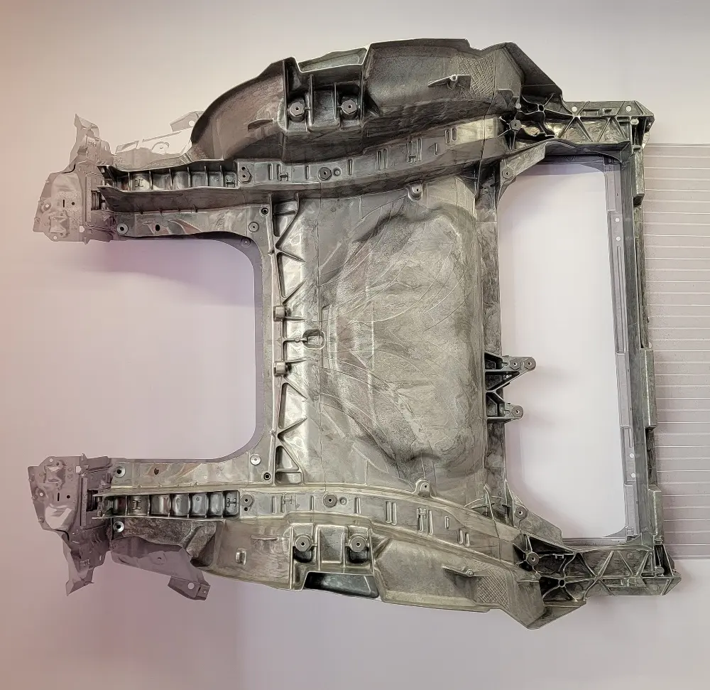
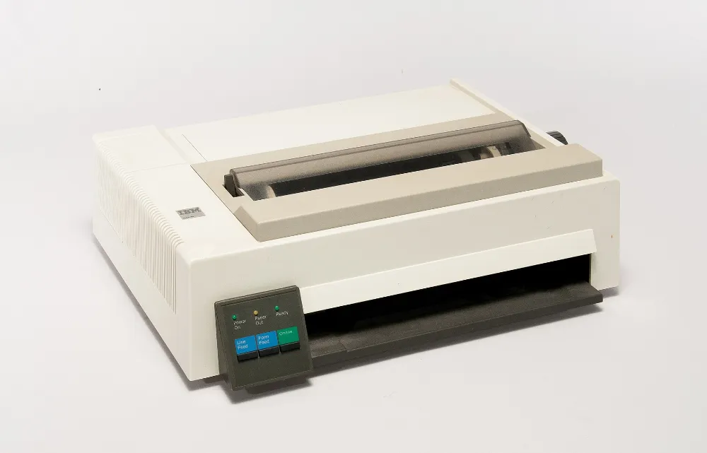
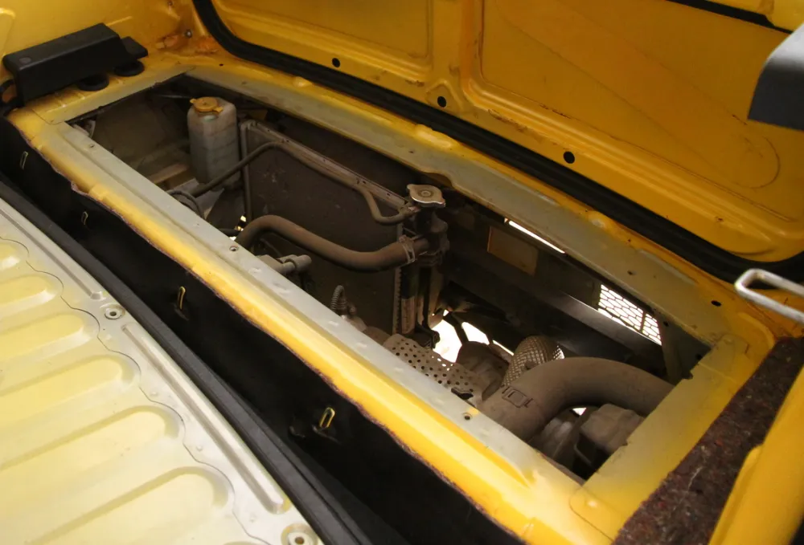

Foundations of Value Engineering
You will learn
- What value means, and the simple equation behind the whole method
- The five ways to improve value
- The difference between VA, VE and VM, and the four types of value
- Why VE works better than ordinary cost-cutting
1.1 · Value is a ratio
Everything in this course is built on one equation: Value = Function ÷ Cost. Function is what the product has to do: how well it works, how reliable it is and how appealing it is. Cost is everything you spend to deliver that function over the product's life. A product isn't expensive or cheap on its own. It's good or bad value compared with what it does. Value Engineering is a way of improving that ratio on purpose.
The method started at General Electric in 1947. Lawrence D. Miles noticed that when wartime shortages forced teams to use different materials, the new parts often worked better and cost less. He realised teams had been buying parts when they should have been buying functions. Ask "what does it do, and what else could do it?" and you find many more possible designs.
Read the transcript
What makes something good value? A low price is only half the answer. Value compares what something does with what it costs. Function, divided by cost.
Take two kettles that do the same job. One costs £9.80 to make, the other £12.40. Same function, lower cost: better value. A premium kettle that costs £18 can still be good value, if customers will pay £35 for its look. Looking good is a function too.
VAVE starts by asking what each part is for, in two words. Heat water. Contain water. Convey esteem. Then the team compares what each function costs with what it is worth: the lowest cost of doing that job reliably.
A £10 watch tells the time reliably. So telling the time is worth about £10. A £5,000 watch tells the same time. The extra pays for esteem. A charger packed in a rigid gift box costs more to make, but most people throw the box away. That's cost the buyer doesn't value.
Back to Kettle B. The status light costs 60p, but could be done for 15p. The premium finish costs £2.10, but is worth about 70p on a basic kettle. Across all six functions, the same job could cost £8.60. £3.80 less.
Asking what it must do also opens up new ideas. A car doesn't need to carry a spare wheel. It needs to get you moving after a puncture. That's why many cars now use a repair kit.
First ask what it must do. Then ask how to make it cheaper.
Seventy-five years of buying functions, not parts
How the method grew, from a wartime shortage to today's AI tools.
- 1947
Born at General Electric
Lawrence D. Miles turns wartime material swaps into a method: buy functions, not parts. Value Analysis begins.
- 1954
The US Navy uses it in design
The US Navy Bureau of Ships uses the method during design, before the cost is fixed, and calls it Value Engineering.
- 1959
A profession forms
The Society of American Value Engineers (now SAVE International) is founded. It later sets out the six-phase job plan.
- 1961
The first textbook
Miles publishes Techniques of Value Analysis and Engineering, still the main book on the subject.
- 1965
Japan adopts it widely
The Society of Japanese Value Engineering is formed. VA becomes normal practice in Japanese manufacturing and later shapes target costing.
- 1993
Written into US law
OMB Circular A-131 requires every US federal agency to use VE and report the results each year. VE on highway projects becomes a legal requirement.
- 2000
The European standard
EN 12973 sets out Value Management across Europe, alongside SAVE International's standard.
- Today
AI tools
Software that costs a design straight from CAD, digital teardown libraries and AI-assisted idea generation turn weeks of analysis into hours (Module 11).
In 75 years the method has gone from a wartime workaround to a recognised engineering discipline, with professional societies and certifications, US law, a European standard and now AI tools. Fashionable methods come and go within ten years. Methods that work last for generations. This one works.
1.2 · Five ways to improve value
- Same function, lower cost — the classic cost reduction, and where most VE work happens
- More function, same cost — adds value to help you compete
- More function, lower cost — the ideal result, and more common than you'd think
- Function grows faster than cost — a better product that's worth the higher price
- Remove functions customers don't value, cut cost sharply — dropping features, backed by data
Notice what isn't on the list: cutting functions customers value just to save money. That's how cost-cutting damages brands, and it's exactly what starting from functions prevents.
Five ways to improve value, and one that isn't
Each move changes function, cost or both. The sixth looks like a saving but destroys value.
Five ways to improve value. 1: same function, lower cost. 2: more function, same cost. 3: more function, lower cost. 4: function grows faster than cost. 5: remove functions customers don't value, cutting cost sharply. Not VAVE: cutting functions customers value just to save money.
1.3 · VA, VE and VM
Value Analysis (VA) applies the method to products already in production: take the product apart, question each part, redesign it and bring in the changes during production. Value Engineering (VE) applies it during design, before the cost is fixed. Because 70–80% of lifecycle cost is decided by early design choices, one pound of effort in design is worth ten pounds of effort later. Value Management (VM) is the management system that makes both last: targets, savings funnels, regular reviews and training. Together, the practice is called VAVE.
1.4 · The four types of value
- Use value — what the product does, meaning the functions that do the work
- Esteem value — what makes people want it: brand, finish and how good it feels
- Exchange value — what it can be sold or traded for: pricing power and resale value
- Cost value — the total of material, labour, overhead and lifetime costs
Esteem value is real value, because customers pay for it. The VE question is never "get rid of the chrome". It's "is the chrome worth more to customers than it costs?"
1.5 · Value, price and cost: what's the difference?
Engineers often mix up three words. Price is what the market will pay. Competition and how customers see the product set it, and it's mostly outside your control. Cost is what you spend to make and deliver the product. Your design and supplier choices set it, and it's mostly inside your control. Value is the ratio the customer experiences. The market sets the highest price you can charge, and physics sets the lowest possible cost. Everything in between is your margin plus the savings VE is there to find. When someone says "we can't afford that feature", what they mean is that the feature costs more than the market will pay for it. That's an engineering problem you can solve, not a budget complaint.
1.6 · Why VE always pays
The cost-commitment curve is the key idea behind VE. By the time the concept design is frozen, about 70–80% of lifecycle cost is already decided, but less than 10% has actually been spent. Every later stage can only work within decisions already made. That's why an hour of function analysis at a design review beats a month of price negotiation after tooling has started. Volume helps too: a study that takes a few person-weeks and removes just 5% from a high-volume product pays for itself hundreds of times over. It's also why VE is one of the few methods written into law. US federal agencies must use it (OMB Circular A-131), and federal-aid highway projects above set cost thresholds must have a VE study before construction is approved.
Why Value Engineering pays most when it starts early
Cost is decided long before it's spent, and most of it is locked in during early design. The gap between the two curves is where VE makes the biggest difference.
- Concept
- Detailed design
- Production
About 70–80% of lifecycle cost is decided by the end of concept design, while less than 10% has been spent. That's why a pound of VE effort at a design review is worth ten after launch.
Read the transcript
When is most of a product's cost decided? A figure often quoted is that around 70% of lifetime cost is fixed by the end of concept design, through materials, processes, and part count.
Hardly any money has been spent by then. Spending comes later, in production, after the decisions are locked in.
So design reviews are the cheapest place to change cost. Changes after tooling cost more, and save less.
Worked example
A basic kettle and a premium kettle both heat water equally well. The basic kettle costs £9.80 to make. A rival's equivalent costs £12.40: the same functions for more money, so lower value. The premium kettle costs £18 to make, but it adds esteem value that customers happily pay £35 for, so it's higher value too. Value is about the ratio, not the price tag.
Three kettles, one job
The same function at three costs. The cheapest isn't automatically the best value, and the dearest isn't automatically the worst.
Three kettles that all heat water. The basic kettle costs £9.80 to make: good value. A rival's costs £12.40 for the same job: lower value. A premium kettle costs £18 to make, but customers pay £35 for its look and feel: good value too.
Value is the ratio of what something does to what it costs, not the price tag.
Case study — documented
From wartime shortage to a billion a year. The origin story is well recorded. At General Electric in 1947, Lawrence Miles' team had to swap materials because of shortages, and kept finding that the replacements worked better and cost less. They turned that accident into a method. Public records show what it can do at scale. On the US federal-aid highway programme alone, VE studies delivered an average of $1.7 billion a year in savings that were actually put into practice from 2002 to 2011, including $1.0 billion in FY2011 from 378 studies and 1,224 implemented recommendations. Source: FHWA Value Engineering annual summary reports (fhwa.dot.gov/ve).
Common pitfalls
- Treating VE as a polite word for making things cheaper: the method is built on protecting function
- Running it once and declaring victory: savings only add up if you keep doing it
- Leaving it to purchasing alone: 70–80% of cost is decided in design, where purchasing can't reach it
- Skipping function analysis and going straight to ideas: that's a brainstorm, not VE
Key takeaways
- Value = Function ÷ Cost. Work on both sides, and never just cut one.
- VE (design) has about ten times the impact of VA (production), but both pay.
- Starting from functions is what makes VE different from hunting for discounts.
Now do it — hands-on assignment
Pick any household product on your desk. Write down its basic function (a verb and a noun) and five secondary functions. Then ask of each one: is this something it has to do, or just how this design happens to work?
Value thinking or cost-cutting?
Six everyday situations. Choose the answer a value engineer would give and you'll see why straight away.
Pre-Workshop Preparation
You will learn
- How to set the scope of a study and a savings target you can back up
- Who should be on the team, and who can sink it
- The information you need before the workshop
Read the transcript
A VAVE study has three parts: before the workshop, the workshop itself, and the months after it.
Preparation takes 2–4 weeks. You need a sponsor who can make decisions, a written scope with a savings target, usually 10–20%, a mixed team of 6–10, including key suppliers, and a costed parts list, checked by finance.
The workshop lasts 3–5 days, and follows six steps. Gather the facts. Work out what each function costs, and what it is worth. Generate hundreds of ideas, with no criticism. Filter them down to the strongest few. Develop each one into a business case. Then present them to the sponsor.
After the workshop, ideas move through four stages: idea; validated by engineering and finance; approved by the sponsor; and in production. At approval, every idea gets a yes, a no, or more data by a date. And each yes gets an owner.
The funnel is reviewed every month, and savings count only once the change is in production. Many approved ideas never reach production. Making sure they do is a leadership job.
2.1 · Scope and sponsorship
Most failed VE studies fail before they start. Preparation takes 2–4 weeks. It starts with a sponsor: someone senior enough to provide people and money, and to act on the decisions. You also need a written scope: which product, which starting cost, what target (usually 10–20% of the cost being studied) and what's definitely out of bounds. Without a scope, a study drifts. Without a sponsor, it produces slides and nothing else.
2.2 · The team
Six to ten people from different departments: design engineering, manufacturing, purchasing, quality, finance and service, plus key suppliers who know their materials and parts. A team from one department comes up with the same kind of ideas. The best ideas come when people from different departments challenge each other. A trained facilitator leads the team and runs the process, but doesn't supply the answers. Ideally they're certified (VMA/AVS/CVS, covered in Module 12).
2.3 · The information pack
- Costed parts list (BOM) — every part with its material, process, labour and overhead cost, checked by finance. You can't do without this.
- Quality history — the most common warranty claims, scrap and rework figures, and how products fail in use
- What customers say — their requirements, satisfaction scores and which features they actually use
- Volumes and forecasts — because whether a saving is worth it depends on how many you make
- Competitor samples — buy them early, because what you learn from taking them apart helps at every stage
- The real parts — the actual product in the room. People have better ideas about things they can hold.
2.4 · Choosing the right first product
Whether a programme succeeds depends on how well the first study goes, so choose the product carefully. Score each option on: spend (yearly volume × unit cost, big enough to matter), design control (you're actually allowed to change it), life left (at least 2 more years of production to collect the savings), pain (margin pressure or warranty problems, so people want it fixed), and data (a costed parts list exists or can be built in two weeks). The ideal first product is a fairly simple, high-volume one that your own engineers designed. The worst is your flagship product, with tooling that can't change and a chief engineer who'll defend every detail.
2.5 · The key roles in a study
- Sponsor — owns the target, comes to the kick-off and Phase 6, and removes obstacles. No sponsor, no study.
- Facilitator — runs the process and keeps time. On purpose, this is NOT the person who knows the product best, because experts tend to defend the current design.
- Finance partner — checks the starting cost and every savings figure. Involving them from day one stops someone saying "those numbers aren't real" in Phase 6.
- Idea champions — one person for each idea that gets through Phase 4, who takes it through development.
- Note-taker — writes down every idea word for word, with the function it relates to. Don't rely on memory.
Who's in a VE study, and what each person does
One sponsor who can make decisions, one facilitator who runs the process, and a mixed team who do the thinking.
Diagram of a VE study team. At the top, the sponsor owns the target, comes to the kick-off and the decision meeting, and removes obstacles. Below, the facilitator runs the process and keeps time, and the note-taker writes every idea down word for word. Below them, the core team of 6 to 10 people: design engineering, manufacturing, purchasing, quality, finance (which checks every number), service and a key supplier. At the bottom, idea champions: one named person for each idea that gets through Phase 4.
A team from one department comes up with the same kind of ideas. The mix of departments is the point.
2.6 · Fix the starting cost, then set the target
Before the workshop, fix a dated starting cost: a specific version of the parts list, a set volume and a currency. Agree how savings will be measured, for example gross or net, and how you'll allow for changes in material prices. Nobody believes savings measured against a starting point that keeps moving. Then base the target on evidence, such as the gap to a competitor, the margin you need, or the mismatches found in an earlier review. Don't just pick a round number.
2.7 · The workshop week: a plan that works
- Day 1: Information and functions — go through the costs, walk the production line and look at the product; start function analysis while it's all fresh
- Day 2: FAST, worth and targets — the FAST diagram, function–cost matrix and Value Index; by the end of the day the team knows exactly where the mismatches are
- Day 3: Creative — a full day generating ideas for the target functions, using brainwriting, SCAMPER and TRIZ. No criticism allowed all day
- Day 4: Evaluation and champions — sort the ideas, screen them and score them in a weighted matrix. Each idea that gets through has a named champion and a review date
- Day 5: Develop and present — draft the business cases, note the risks, and end the week with a decision meeting with the sponsor, recording every decision
For smaller studies, a three-day version works: combine days 1–2 and days 4–5. For complex products, a split format suits better: two days, a two-week break to gather more data, then two more days. The one thing you can't shorten is keeping the phases separate. If you generate ideas and judge them in the same session, both suffer.
The workshop week, day by day
Five days, with the phases kept apart. Ideas are created on Day 3 and judged on Day 4, never in the same session.
Diagram of the five-day workshop. Day 1, phases 1 and 2: information and functions. Day 2, phase 2: FAST, worth and targets. Day 3, phase 3: creative, with no criticism allowed. Day 4, phase 4: evaluation and champions. Day 5, phases 5 and 6: develop and present, ending with the decision meeting. A three-day version combines days 1 and 2, and days 4 and 5. A split format for complex products runs two days, then a two-week break to gather data, then two more days.
Worked example
Here's a scope statement for a study of a washing machine's drum unit: "Reduce works cost of drum assembly (baseline £38.20/unit, validated 12 May) by ≥12% within 9 months. In scope: drum, spider, bearings, seals, counterweights. Out of scope: motor (separate programme), safety-critical fastener grades. Sponsor: VP Engineering. Team: design, mfg, purchasing, quality, finance + bearing supplier." It's just one paragraph, but it settles every argument before the workshop starts.
The worked example as a one-page scope
Five boxes that settle the arguments before the workshop starts.
The drum assembly scope statement as a form. Baseline: £38.20 a unit, checked by finance on 12 May. Target: at least 12%, about £4.58 a unit, within 9 months. In scope: drum, spider, bearings, seals and counterweights. Out of scope: the motor, which has its own programme, and safety-critical fastener grades. Sponsor: VP Engineering. Team: design, manufacturing, purchasing, quality, finance and the bearing supplier.
Case study — documented
Preparation, mandated by law. US federal-aid highway projects above set cost limits must have a VE study before construction. Each study has to be scoped, staffed and finished at set points in the project. Being forced to prepare properly is a big reason the programme saves hundreds of millions of dollars every year, instead of relying on a few heroic efforts. Source: 23 U.S.C. §106(e) / FHWA VE regulations (23 CFR Part 627).
Common pitfalls
- Starting without a sponsor who can actually make decisions
- A team from just one department, which produces the same kind of ideas
- Starting with a parts list finance hasn't checked, so the workshop turns into an argument about the numbers
- Choosing "the whole product" as the scope, which means you only scratch the surface
- Setting targets by order, with no evidence behind them
Key takeaways
- Allow 2–4 weeks to prepare. You can't start without a costed parts list checked by finance.
- A team of 6–10 from different departments, with a facilitator who runs the process but doesn't supply the answers.
- No sponsor, no study. You need someone with the authority to make decisions.
Now do it — hands-on assignment
Write a five-line scope statement for a product you know well: starting cost, target %, what's in scope, what's out of scope, and the sponsor. Use the pre-workshop checklist in the VE Workshop Agenda template.
Would this study succeed?
Six situations from the weeks before a workshop. Choose the best move and you'll see why straight away.
Phase 1 — Information
You will learn
- Miles' five questions and why they still work
- How to build a starting cost the whole team trusts
- Using Pareto to find where most of the cost is
3.1 · Know the product inside out
The Information Phase builds the full picture before anyone suggests anything. It's organised around Miles' five questions: What is it? What does it do? What does it cost? What is it worth? What else could do the job? Answering the first four before you touch the fifth is what makes a VE study different from a brainstorm.
Miles' five questions, in order
Four questions of fact before one question of ideas. That order is what separates a VE study from a brainstorm.
Miles' five questions in order. Questions 1 to 4 are facts gathered in the Information and Function Analysis phases: what is it, what does it do, what does it cost, what is it worth. Only then question 5, in the Creative phase: what else could do the job?
3.2 · The cost walk
Go through the costed parts list as a team: material, processing, labour, overhead, logistics and warranty. Then rank it with a Pareto chart. Usually 20% of the parts make up 80% of the cost, and those are the parts to focus on. Then do a process walk: visit the production line, watch the assembly and time each step. A cost that looks reasonable on a spreadsheet often looks ridiculous on the factory floor.
Where the money is: the Pareto curve
Rank the parts by cost and add them up. A small group at the top carries most of the cost.
Pareto curve from the worked example: a parts list of 220 parts ranked by cost. The top 18 parts, about 8% of the parts, make up 78% of the total cost. The curve's exact shape is illustrative; the marked point is from the example.
The marked point comes from the worked example below; the rest of the curve's shape is illustrative. Study the top of the list first.
3.3 · Requirements, not assumptions
Find out what customers actually need, using QFD, Kano analysis or simple structured interviews. Label each requirement as a must-have, a performance feature or a nice surprise. Later, when someone says "customers need this", the team checks the evidence instead of listening to whoever is loudest.
3.4 · Organising cost data so it tells you something
A costed parts list tells you what each part costs, but the Information Phase needs to know why it costs that. Split every part into material, processing, labour and overhead, and be wary of how overhead is shared out. Standard costing systems spread indirect costs by labour hours or material value. That can make a simple part look expensive and an expensive process look cheap. Work out cost density: £ per kg compared with typical material prices, and £ per function compared with the worth figures you'll set in Phase 2. Density shows up odd costs that a simple Pareto ranking hides.
Cost vs worth: the value gap you're hunting
For each function, put what it costs today next to what it's worth: the cheapest reliable way to do the same job. The bigger the gap, and the higher the value index (VI = cost ÷ worth), the bigger the saving.
Chart summary: indicate status costs £0.60 but is worth £0.15 (value index 4.0); transmit torque costs £2.30 and is worth £1.10 (2.1); contain water costs £0.90 and is worth £0.55 (1.6); support load costs £1.20 and is worth £0.90 (1.3).
Indicate status is the main target: it costs 4× its worth. A neon lamp shows status for £0.15, so the extra £0.45 is cost the customer never asked to pay for.
3.5 · The Kano model in five minutes
- Must-be — taken for granted (the brakes work). Customers are furious if it's missing, but doing it brilliantly earns nothing. Deliver it at the lowest cost that does the job.
- Performance — the more the better (fuel economy, capacity). Customers knowingly pay more for these, so spending here is reflected in the price.
- Attractive — nice surprises customers don't expect. They add a lot of esteem value, but check the data before spending money on them.
- Indifferent — customers really don't care. The best place to look for things to remove.
- Reverse — some customers actively dislike these (complexity, extra buttons). Removing them raises value and cuts cost at the same time, which is the perfect VE result.
Sorting requirements into Kano categories turns the vague rule "don't hurt the customer" into a precise one: protect must-be and performance features, question attractive ones, and go after indifferent and reverse ones.
3.6 · Gathering the facts you already have
Most of what the Information Phase needs already exists in the business. It's just scattered, nobody owns it, and it's never been put together. The most useful sources are: warranty claim text (what actually fails, in the customer's own words, and the best description of functions you have); spare-part sales (the parts people buy as spares are the parts that break, a reliability ranking nobody has put together); rework and scrap records (where the design causes problems in the factory every day); customer return comments (problems with looks and ease of use that never reach engineering); spend analysis (different prices paid for almost identical parts across factories and suppliers); and past study records (ideas set aside last time are already partly checked and ready to reuse). During preparation, give each source an owner and a one-week deadline. This kind of digging is exactly what AI tools now speed up most: they can group ten thousand warranty claims by function in an afternoon (Module 11 shows how). A team that arrives with six sources put together doesn't argue about opinions. It argues about which fact to tackle first.
Worked example
A parts list with 220 parts was ranked by cost. The top 18 parts made up 78% of the cost, so the study focused on them. On the process walk, the team saw an operator removing sharp edges from every housing by hand. That step wasn't in any process plan or cost model. It took 40 seconds of labour per unit, didn't show on any spreadsheet, and was only found by walking the line.
Case study — documented
Information phase at its purest: the Tata Nano. The price was set first, at ₹1 lakh (about $2,500), and announced publicly. The whole information phase worked backwards from that price, to a target cost of around ₹65,000. Every requirement was checked against what Indian families, especially in rural areas, actually needed from a car. The final decisions (one windscreen wiper, three wheel nuts, no radio, glue instead of welding in places, a rear engine) were only possible because the team first found out, with data, which functions customers valued and which they didn't. Source: published target-costing case literature on Tata Motors' Nano programme (2003–2008).
Common pitfalls
- Trusting how overhead is shared out: it's just a calculation, not what really causes the cost
- Asking for opinions instead of watching how people use the product: what customers do matters more than what they say
- Skipping the production-line walk: the factory floor shows what spreadsheets hide
- Letting the loudest voice set the spec, instead of the evidence
Key takeaways
- The Information Phase is about 20% of the workshop effort. Never skip it or rush it.
- What you get: a checked list of costs and requirements, ranked by cost.
- Handle the product and walk the line. The factory floor shows what spreadsheets hide.
Now do it — hands-on assignment
List your product's ten biggest parts and guess their order by cost. Now find the real numbers for the top three. How far off were you? That gap is why the Information Phase exists. Capture it in the Function–Cost Matrix worksheet (Step 1).
Modules 1–3: have you got the basics?
Eight situations covering value, preparation and the Information Phase. Choose the best answer and you'll see why straight away.
Phase 2 — Function Analysis & FAST
You will learn
- What a "function" is, in the simplest possible words
- How to write any function in exactly two words: active verb + measurable noun
- Every type of function, one by one, with everyday examples and simple tests
- How a FAST diagram is built, shown step by step
- A reference library of verbs and nouns you can use forever
- The function–cost matrix, worth, and the Value Index
4.1 · What is a function? (Start here)
Look at the pen on your desk. Most people see a thing: a tube, a spring, a clip, some ink. A value engineer sees jobs: the ink makes marks, the spring stores energy, the clip secures the pen to a pocket. A function is the job a thing does — not the thing itself. That one shift in seeing is the heart of Value Engineering.
Why does it matter so much? Because customers never buy parts — they buy jobs done. Nobody wants a heating element; they want hot water. Nobody wants six screws; they want two parts held together. The moment you describe a product as jobs instead of parts, you free yourself to ask the most powerful question in engineering: "what else could do this job — better, or cheaper?"
Remember Lawrence Miles' insight from Module 1: teams were buying parts when they should have been buying functions. Phase 2 is where that idea becomes a working method.
The same kettle, seen as jobs
Each part is there to do a job. Write the job down, and you can ask what else could do it.
A kettle with seven parts and the job each does. Element: heat water. Body: contain water. Thermostat: control temperature. Spout: enable pouring. Handle: prevent scalding. Lamp: indicate status. Chrome trim: convey esteem.
Parts on the left, jobs on the right. The jobs are what the customer pays for.
4.2 · The two-word rule: active verb + measurable noun
Value Engineering writes every function as exactly two words: an active verb (a doing word) plus a measurable noun (a thing you can count, weigh, or test). "Heat water." "Transmit torque." "Support load." Two words. Always.
Why so strict? Three reasons, and each one earns money:
- Two words force clarity. If you need a sentence, you haven't understood the job yet. "It provides a secure mounting interface for the assembly" becomes, honestly: position component.
- Two words remove the solution. "Fasten flange" secretly assumes bolts. "Join components" opens welding, adhesives, snap-fits — or redesigning so there is nothing to join. The vaguer the verb–noun pair sounds, the wider the door to better ideas.
- Two words can be measured. "Conduct current" — you can measure amps. "Support load" — you can measure newtons. If you can measure it, you can put a cost and a worth on it. If you can't measure it, you can't engineer it.
The acid test for any function statement: could two engineers independently agree how to measure whether the job is being done? "Emit light" — yes, lumens. "Provide illumination solutions" — no. Rewrite it.
4.3 · The banned verbs (and how to spot a fake function)
Some verbs sound professional but say nothing. Ban them: provide, allow, enable, facilitate, ensure, support (as in "support the user"), improve, assist. They fail the measurement test, and they usually smuggle a part into the sentence. "Provide mounting" is just a bracket wearing a disguise. "Enable operation" is the whole product wearing a disguise.
Fake functions come in four flavours — learn to spot each one:
- The banned verb — "provide heat" → say generate heat.
- The hidden solution — "fasten with screws" → the screws are one answer, not the job. Say join components.
- The unmeasurable noun — "create convenience" → convenience isn't measurable. What actually happens? reduce effort, save time.
- The product in disguise — "boil kettle" → the kettle is the product, not the job. Say heat water.
4.4 · The function family — every type, one by one
Not all functions are the same, and the differences show you where the savings are. Here are all the types, each with a simple test you can do in seconds:
- Basic function — the reason the product exists. Test: remove it — is the product now pointless? A kettle that cannot heat water is a jug. There is exactly one basic function per study scope; if you find three, you are really looking at three studies.
- Secondary functions — jobs that exist only because of how this particular design achieves the basic function. The kettle's element must resist corrosion only because we chose a metal element immersed in water. Choose a different design and many secondary functions simply disappear. That's why most of the cost you can remove is here.
- Required secondary functions — demanded by law, codes or safety standards: suppress interference, resist flame. Test: would a regulator object if it vanished? You can't remove these, but you can do them more cheaply. You must have them, but how you do them is up to you.
- Esteem functions — jobs that make people want the product: convey quality, please eye. The soft-close hinge, the satisfying click, the gloss finish. Test: would the product still work without it, but sell worse? Esteem value is real value, so measure it with market data, not opinions.
- Unwanted functions — jobs the design does that nobody asked for: the motor generates heat, the pump creates noise. Each unwanted function usually needs extra parts to deal with it (heat sinks, insulation, dampers), and they all add cost. Get rid of the unwanted function and those extra parts go too.
- Unnecessary functions — functions that don't support anything else. These are the easiest wins: remove them and nothing is lost. They're usually left over from an older design that nobody questioned.
- All-time functions — jobs performed constantly across the whole product, like ensure safety and convey esteem. On a FAST diagram they float above the main path.
- Higher-order & assumed functions — the objective your product serves (prepare beverage) sits outside the left scope line; things you take as given (supply power) sit outside the right. They mark the edges of the diagram but aren't studied.
4.5 · The FAST diagram, built step by step
FAST stands for Function Analysis System Technique. It's a map that arranges your functions by how they connect, not by where the parts are. It uses two simple questions: moving right asks HOW? a function is done, and moving left asks WHY? it's needed. If the chain makes sense in both directions, your team really understands the product. If it doesn't, a card is in the wrong place, and you've found a misunderstanding before it cost you money.
Read the transcript
A parts list shows what's in a product, not why it's there. A FAST diagram shows why.
Write every function in two words: an active verb, and a measurable noun. Heat water. Contain water. Prevent scalding.
Pick the function the product exists for. For a kettle, that's heat water: the basic function.
Ask how we heat water. We generate heat. How do we generate heat? We conduct current. Moving right answers how.
Now read it backwards, and ask why. Why generate heat? To heat water. Why heat water? To prepare a beverage: the customer's real goal.
Scope lines mark what this study covers. Supply power comes from the socket. We use it, but won't redesign it.
Functions that happen at the same time go below the path. When we heat water, we also contain water, control temperature, and show status.
Functions needed all the time sit above the path. Protect the user, done by preventing scalding. And convey esteem.
If how, why and when all make sense, the team understands the product. If not, you've found a misunderstanding early.
Press Next step to build a real FAST diagram for an electric kettle:
Finished diagram: the basic function is heat water. Asking how: generate heat, then conduct current. Supply power is an assumed function outside the right scope line. Asking why: prepare beverage, the higher-order function outside the left scope line. Protect user, prevent scalding and convey esteem are all-time functions above the main path. Below heat water, three functions that happen at the same time: contain water, control temperature and show status. Use the Next step button to hear it built step by step.
Here’s the finished diagram, faded. Press Next step to build it one card at a time.
Two practical points. First, when a function needs several other functions at the same time, stack them on top of each other (an AND). When there are different ways to do it, draw them as branches (an OR). Second, there are two kinds of FAST: the technical FAST you just built, and the customer FAST, which starts from what customers need (assure dependability, assure convenience). The customer FAST is useful when you're studying a whole product rather than one part of it.
4.6 · The function library — your verb & noun toolbox
Stuck for the right two words? Use this library. Pick a category, borrow the verb and noun, and change the noun to fit your product. Every entry is written the way a function should be: an active verb and a measurable noun.
4.7 · Adding the costs: function–cost matrix, worth and the Value Index
The logic on its own doesn't save money, so now we add the costs. Take every part's cost and split it across the functions that part does. Each row adds up to the part's cost, and each column adds up to the function's total cost. For the first time, you can see what you're actually paying for each job, and it's always a surprise.
Next, estimate each function's worth: the lowest cost that could still reliably do the job. Estimate it honestly in one of four ways: (1) the cheapest existing solution in any industry (a neon lamp shows status for £0.15, whatever your current circuit board does); (2) the physical minimum: the least material and energy the job really needs; (3) your best result in the past; (4) asking several experts and comparing their answers, when data is thin. Never set worth equal to the current cost. That's a classic way of fooling yourself, and it guarantees the study finds nothing.
Finally divide: Value Index = Cost ÷ Worth. The VI turns gut feeling into a ranked list of targets:
- VI ≤ 1.2 — healthy; leave it alone
- VI 1.2–2.0 — keep an eye on it and question it at the next design change
- VI > 2.0 — act now; this function goes straight to the Creative Phase
Example: a kettle's "indicate status" function costs £0.60, but a simple neon lamp does the same job for £0.15 — VI = 4.0. At a million units a year, that one line of arithmetic is worth £450,000. VE decides where to focus by doing the maths, not by arguing.
Worked example
Check the FAST logic both ways: "WHY do we generate heat? — to heat water. HOW do we heat water? — by generating heat." It makes sense in both directions, so the logic holds. Now the matrix: "indicate status" carries £0.60 of cost but a neon lamp achieves the function for £0.15 — VI 4.0. At 1 million units a year, that one line is a possible saving of £450k a year, found with simple arithmetic.
Case study — documented
Where FAST came from. Function analysis existed from Miles' first studies, but the diagram that made function logic testable was created in 1965 by Charles W. Bytheway, an engineer at Sperry Rand UNIVAC, who presented the Function Analysis System Technique at that year's national conference of the Society of American Value Engineers. His HOW→ / ←WHY check is still the main way to test function logic sixty years later, because it turns an argument about opinions into a test any team can do out loud. Source: SAVE International value methodology literature.
Common pitfalls
- Writing solutions dressed as functions ("provide bracket")
- Finding three "basic" functions — that's three scopes, not one
- Setting worth equal to current cost, guaranteeing the study finds nothing
- Trying to split costs down to the last penny: rough ranges are better than false precision
- Skipping the read-aloud check in both directions: logic that hasn't been checked causes problems in every later phase
Key takeaways
- A function is the job, not the thing — and customers only buy jobs done.
- Two words: active verb + measurable noun. If you can't measure it, rewrite it.
- One basic function per study. Most of the cost you can remove is in the secondary functions.
- FAST: HOW→ / ←WHY between scope lines; valid logic reads both ways.
- VI = Cost ÷ Worth. Anything above 2.0 goes on your target list. VE uses arithmetic to decide where to focus.
Now do it — hands-on assignment
Do a full function analysis of a stapler or kettle: functions table, FAST sketch, cost allocation, worth estimate, VI. Print the FAST Diagram Worksheet and the Function–Cost Matrix — 30 minutes, and you'll have run Phase 2 for real.
🎯 Function Identification Challenge
Eight everyday objects. For each one, pick the correctly written function. You'll see straight away why the wrong answers don't work. This is practice, not a test, so try as often as you like.
Phase 3 — Creative Techniques
You will learn
- Why good ideas get lost in normal meetings, and Osborn's four rules that protect them
- Six ways to generate ideas, each with an example, and when to use each one
- How to run brainstorming, brainwriting 6-3-5, SCAMPER, TRIZ, morphological analysis and biomimicry on real functions
5.1 · The most fragile moment in the whole job plan
You have just finished Phase 2. You know exactly which functions cost too much — the kettle's "indicate status" function costs £0.60 and is worth £0.15. Now comes the question the whole study exists for: "how else could we do this?" And here is the uncomfortable truth: the answer is fragile. New ideas arrive weak, half-formed and easy to kill. A raised eyebrow kills one. A quick "we tried that in 2019" kills another. The boss speaking first kills ten, because everyone quietly rearranges their thinking around what the boss said. The Creative Phase isn't about being talented. It's about creating a safe space where fragile ideas last long enough to develop.
One more mindset shift before the techniques: you are not looking for the answer. A strong workshop produces 200–400 raw ideas, and only about one in eight survives evaluation. That isn't failure, it's just the maths. If you want 25 implemented improvements, you need a couple of hundred raw ideas to start with. Quantity is the strategy, and every technique in this module is simply a different way of producing lots of ideas.
5.2 · Osborn's four rules for the room
Alex Osborn, the advertising executive who invented brainstorming in the 1940s, wrote four rules. They sound soft, but they're not. They're what makes this phase work, and breaking one in front of everyone puts the room back into judging mode for the rest of the day.
- 1 · Defer all judgement. No criticism, no praise either — "great idea!" tells everyone else theirs wasn't. Evaluation has its own phase; it can wait a day. In the room it sounds like: an engineer says "make the bracket from cardboard", and nobody laughs — someone writes it down.
- 2 · Welcome wild ideas. The silly idea is rarely the answer, but it widens the search and helps you find it. "Cardboard bracket" is absurd — but it provokes "how much load does this bracket actually see?", and that question finds the 40% weight saving.
- 3 · Go for quantity. Set a number and chase it: "ten more ideas for 'contain water' before the break." The first five ideas are the obvious ones everyone already had. The best ideas usually come between numbers 15 and 30, after the easy answers run out.
- 4 · Build on ideas — "yes, and…". Ideas are starting points, not final answers. Someone says "snap-fit instead of screws"; someone else adds "yes, and if it snaps from the top, the robot can assemble it in one motion." Most breakthroughs come from combining ideas.
5.3 · Aim every technique at a function, never at a part
This is the difference between VE ideation and ordinary cost-down brainstorming. Ask a room "how do we make this shaft cheaper?" and you get thin answers: cheaper steel, looser tolerance, ask the supplier for 5%. Everyone is stuck on the existing design. Ask instead "how else can we transmit torque?" Name the function and keep the part out of sight on purpose, and the room comes up with splines, press-fits, polygon shafts, adhesives, friction welds and overmoulds. That's ten completely different approaches, not three discounts. Use every technique below on the functions with the worst Value Index from Phase 2, one function at a time, written at the top of the board.
5.4 · Classic brainstorming: how to make it work
Everyone thinks they know brainstorming; most meetings called "brainstorms" are just discussions. Done properly, it has clear rules. A facilitator enforces the four rules and doesn't add ideas. There's one function on the board at a time. You work in 25-minute bursts with proper breaks, because people run out of ideas after about half an hour. Every idea is written down word for word, with the function it relates to, because rewording loses the unusual parts. And the most senior person speaks last in every round, because whatever they say first shapes everyone else's thinking. When ideas dry up, the facilitator throws in a challenge ("how would IKEA do this?", "what if it had to cost nothing?", "what would a £2 toy that does this look like?") and the ideas start again. Brainstorming is fast, sociable and energising, but it favours loud voices. That's exactly why the next technique exists.
5.5 · Brainwriting 6-3-5: a fair chance for quiet people
Six people, three ideas each, five minutes — in silence. Each person writes three ideas for the target function on a sheet, then passes the sheet to the neighbour. Next round, you read what arrived and write three more — new ideas, or better versions of what your colleague started. After six rounds every sheet has visited everyone: 6 × 3 × 6 = 108 ideas in thirty silent minutes.
Watch one idea travel: round 1, Priya writes "snap-fit cover". Round 2, Marek reads it and adds "snap-fit with moulded-in hinge — lid never gets lost". Round 3, Chen adds "make the hinge the cable guide too — deletes a clip". One idea turned into a way of using fewer parts that nobody had thought of at the start. Because it's silent, the loudest person adds exactly three ideas per round, the same as the quietest graduate, who often knows the product best. Start every creative session with 6-3-5: it guarantees lots of ideas, gives everyone an equal say, and gets everything written down before any discussion.
Brainwriting 6-3-5: how one sheet grows
Six people round a table. Every five minutes, each sheet moves one seat on, and its new owner adds three ideas.
Diagram: six seats round a table, with sheets passed one seat clockwise every round. Six people, three ideas each, six rounds: 108 ideas in 30 minutes. One idea's journey: in round 1, Priya writes "snap-fit cover". In round 2, Marek adds a moulded-in hinge so the lid never gets lost. In round 3, Chen makes the hinge the cable guide too, which removes a clip. The result is one part fewer, an idea nobody had at the start.
Read the transcript
In most meetings, the loudest voice wins. Ideas from quieter people never get said, and a quick 'we tried that in 2019' kills the rest.
Brainwriting 6-3-5 fixes that. Six people, three ideas each, five minutes, and nobody speaks.
Each person writes three ideas for the same function, then passes the sheet to the next seat. You read what arrives, and add three more: new ideas, or better versions of your colleague's.
Watch one idea travel. Priya writes 'snap-fit cover'. Marek adds a moulded-in hinge, so the lid never gets lost. Chen makes the hinge the cable guide too, and a clip disappears. One part fewer: an idea nobody had at the start.
After six rounds, every sheet has visited everyone. That's 108 ideas in 30 silent minutes, and the quietest person added exactly as many as the loudest.
So start every creative session with 6-3-5. You get lots of ideas, everyone gets an equal say, and it's all written down before anyone starts judging.
5.6 · SCAMPER: a checklist for changing a design
SCAMPER is seven questions you ask about an existing design, one letter at a time: Substitute, Combine, Adapt, Modify or magnify, Put to other use, Eliminate, Reverse. It's mechanical on purpose: when the room is tired and ideas have stopped, the checklist keeps them coming. Ask each question about the part, the material, the process, even the packaging. The strongest letter in VE is E — eliminate: "what if this part simply didn't exist? which neighbour could do its job?" Try each letter on a torch in the explorer below, then ask the same questions about your own product.
SCAMPER explorer: rethink a pocket torch
Click each letter to see the question it asks and what it produces for an ordinary £8 aluminium pocket torch.
5.7 · TRIZ in twenty minutes
TRIZ is based on a study of millions of patents. Its main idea is that inventive problems are contradictions, and the same 40 or so principles solve them in every industry. A technical contradiction is "improving A makes B worse": stiffer but heavier, faster but hotter. Look up the two properties in the contradiction matrix and it shows the principles inventors have used before. Example: strength vs. weight of a moving part points to Principle 1 (Segmentation — ribbed or hollow structures), 8 (Anti-weight — counterbalance), 15 (Dynamics — make it adaptive) and 40 (Composite materials). A physical contradiction is "A must be X and not-X" (hot AND cold, present AND absent) — resolved by separation: in time (hot during brazing, cold in use), in space (rigid here, flexible there), or by condition. The goal to aim for is the Ideal Final Result. It asks: "how could this function happen by itself, with no part, no cost and no harm?" Snap-fits are the ideal result for joining parts, and just asking that question produces ideas.
TRIZ contradiction navigator & idea sprint
Try TRIZ on a real trade-off, then do a timed idea sprint on your own. These are the two skills this phase builds.
1 · Pick your contradiction
Choose what you want to improve and what gets worse — the navigator shows the principles engineers have used before, with a product idea for each.
2 · Three-minute idea sprint (solo 6-3-5)
Pick a function, hit start, and type one idea per line. No judging, no deleting — quantity is the goal. Nine or more ideas in three minutes is the speed of a good workshop.
5.8 · Morphological analysis: finding new combinations
When a product has several sub-functions, break it into them and list every known solution for each — then combine. For the torch: provide light (LED array, single high-power LED, laser diode, electroluminescent panel), store energy (AA cells, rechargeable li-ion, supercapacitor, hand-crank dynamo), control output (push switch, twist bezel, proximity sensor). That little table already holds 4 × 4 × 3 = 48 possible torch concepts — including combinations nobody has built, like "single LED + hand-crank + twist bezel" (the emergency torch that never needs batteries). Most combinations make no sense. You're looking for the three or four new ones worth taking into evaluation. Morphological analysis is the slowest technique but the most thorough — use it when the function structure is rich and you suspect the winning combination has simply never been tried.
A morphological box for the torch
List every known way to deliver each sub-function, then pick one from each row. Here's one combination nobody has built yet.
Table of torch options. Provide light: LED array, single high-power LED, laser diode or electroluminescent panel. Store energy: AA cells, rechargeable li-ion, supercapacitor or hand-crank dynamo. Control output: push switch, twist bezel or proximity sensor. Highlighted combination: single high-power LED, hand-crank dynamo and twist bezel, which gives an emergency torch that never needs batteries. 4 × 4 × 3 = 48 possible concepts.
5.9 · Analogy and biomimicry: borrow from other industries and nature
Someone, somewhere, already delivers your function for less — often in a different industry, sometimes in nature. The questions are simple: "which industry does this function at one-tenth of our cost?" and "how does nature do it?" The track record is famous. Velcro came from burrs stuck to a dog's fur. The Shinkansen bullet train's nose copies the kingfisher's beak — a bird that enters water without a splash — which cut the train's tunnel boom and its energy use. Drag-reducing surfaces copy shark skin. And at workshop scale: a £2 toy transmits torque with a moulded polygon and no key at all; a drinks carton "contains fluid" for pennies; a bicycle brake controls huge friction forces with simple pressed-metal parts. Pick your function, ask "who else has this problem, and solves it more cheaply?", and spend twenty minutes looking at how they do it.
5.10 · Using AI to generate ideas
This is the newest tool. Give an AI assistant the FAST diagram, the parts list and the constraints, and it will produce and group hundreds of possible ideas in minutes, including solutions from other industries nobody in the room has seen. A working prompt looks like: "Here are our functions and costs. For the function 'dissipate heat', currently a £2.10 aluminium heatsink: list 20 alternative ways to deliver this function, grouped by physics, including approaches from consumer electronics, automotive and aerospace." The roles are clear: the AI generates ideas, and people judge them. AI means you'll always have plenty of ideas, but the team still decides what's feasible, checks what's new and makes the choice.
5.11 · The techniques are a toolkit, not a menu
Use them in order: start with brainwriting 6-3-5 (silent, fair and quick to produce ideas), then brainstorming on each function to build on what's been written, then SCAMPER for the difficult functions. Bring in TRIZ when a real contradiction is in the way, morphological analysis when a detailed function structure might hide untried combinations, and finish with analogy rounds ("how does a £2 toy solve this? how does nature?"). Targets help: "ten more ideas for 'contain water' before lunch" usually produces eight average ideas and two great ones, which is exactly what you want.
Worked example
Target function: transmit torque (currently a keyed shaft, VI 2.3). Eight ideas in four minutes of brainwriting: spline, press-fit, taper-lock, polygon shaft, integrated forging, adhesive bond, friction weld, plastic overmould. A TRIZ pass on "stiffer but lighter" adds two more via principle 1 (segmentation: ribbed hollow shaft) and principle 40 (composite material). A morphological table with three joining methods adds one completely new combination. That's eleven options where the drawing showed one.
Case study — documented
Samsung's TRIZ programme. Samsung adopted TRIZ in 1997 and rolled it out across the company: by 2003 it credited the method with around 50 new patents in a single year, and in 2004 one TRIZ-driven project — a DVD pick-up innovation — was reported to have saved over $100 million, with the methodology contributing an estimated $65M+ annually. More than 1,000 engineers were trained in 2004 alone, and TRIZ competence became an expected skill for advancement. Structured creativity, on a huge scale, with savings you can trace in the accounts. Sources: The TRIZ Journal; Altshuller Institute case reports.
Common pitfalls
- Generating ideas about parts instead of functions: everyone stays stuck on the current design
- Letting the most senior person speak first: one sentence can steer the whole room
- Judging ideas in the room: even a raised eyebrow counts
- Using only one technique: each one finds different kinds of ideas
- Writing ideas in your own words instead of exactly as said: the unusual details are often where the best ideas are
Key takeaways
- Never judge ideas in this phase. Evaluation has its own phase, and one slip makes everyone go quiet again.
- Generate ideas for the function ("how else can we transmit torque?"), never the part.
- Use the tools in order: 6-3-5 so everyone contributes equally, SCAMPER for difficult functions, TRIZ for contradictions, morphology for combinations, analogy for ideas from elsewhere, and AI for extra range.
Now do it — hands-on assignment
Solo 6-3-5: take your worst-VI function from the last exercise and write 3 ideas every 5 minutes for 30 minutes — 18 ideas minimum, no self-censoring. Then run one SCAMPER pass (all seven letters) over the same function. Log everything in the Idea Capture Sheet.
Which technique would you reach for?
Eight workshop situations. Pick the technique that fits best and you'll see why straight away.
Phase 4 — Evaluation
You will learn
- The four-stage funnel that turns 380 raw ideas into a dozen winners, without losing the good ones
- Effort–impact grids, weighted matrices and Pugh analysis, each taught with real numbers
- How to check the winners for risk and group them into options, each with a named champion
6.1 · The morning after: 380 sticky notes and a decision to make
The creative day went well. The wall holds 380 ideas: brilliant ones, silly ones, duplicates, and a few that would get someone fired. Now what? Two failure modes wait for you here. Analysis paralysis: trying to deep-study all 380, running out of steam by idea 60, and quietly picking the familiar ones. Gut-feel sorting: the chief engineer walks along the wall and keeps what they already liked, which makes the whole creative phase pointless. The Evaluation Phase avoids both with a funnel of four rounds. The first rounds are quick and cheap, and each one gets more careful as the list gets shorter. About one idea in eight makes it to development, and that's a healthy rate, not a disappointing one.
From 380 sticky notes to a short list with owners
Each round is more careful than the one before, because there are fewer ideas left to look at. Bars are drawn to scale.
Funnel chart, to scale. Start: 380 raw ideas from the creative day. After round 1, the quick sort into go, grow or park: about 120. After round 2, grouping, merging and the must-pass checks: 60 to 80. After round 3, ranking with the effort–impact grid, weighted matrix and Pugh: a short list of about 45, roughly one raw idea in eight. Round 4 checks each one for risk and bundles related ideas, leaving about 15 proposals, each with a named champion.
Parked ideas aren't deleted. They're the starting list for next year's study.
6.2 · Round 1: quick sort into go, grow or park
First pass is fast and shallow — about a minute per idea, done as a group. Three piles only:
- Go — clearly feasible, clearly valuable. "Replace six screws with two snap-fits" goes straight through.
- Grow — promising but immature. "Some kind of integrated hinge…?" needs shaping before it can be judged. It goes through, marked for improvement, often by combining it with similar ideas.
- Park — not now. Wrong timing, wrong volumes, needs a platform change. Parked doesn't mean deleted. The parked list is the starting point for next year's study, and half of today's "obvious" winners were parked in an earlier round.
Two rules keep this sort fair. Ideas are judged as written, and kindly: you're removing what can't work, not what's unfamiliar. And nobody says "that will never work here". At this stage, the only reasons to reject an idea are physics, safety or the law. An hour of sorting usually cuts 380 ideas to about 120.
6.3 · Round 2: group, merge and screen out
Before any scoring, group the survivors by theme — fastening, material, architecture, packaging. Duplicates merge (eight versions of "use fewer screws" become one strong idea with eight authors), and half-ideas combine into whole ones: "snap-fit cover" plus "moulded hinge" plus "cable guide in the lid" is one integrated-cover concept worth three times any single note. Then apply the must-pass checks: the things no score can outweigh, such as safety and legal compliance, requirements that define the brand, and promises in customer contracts. A £3 saving that breaks a homologation rule doesn't get a low score. It's out. Grouping usually leaves 60–80 separate, checked ideas.
6.4 · Round 3a: the effort–impact grid, in ten minutes
Now the first ranking tool, which is rough on purpose. Ask two questions about each idea: how big is the benefit? (impact: savings, quality, weight) and how hard is it to get? (effort: engineering hours, tooling cost, validation time). Plot every idea on the 2×2:
- Quick wins (high impact, low effort) — do these first; they show early on that the programme works. Example: delete the second label nobody reads — £0.04 per unit, one drawing change.
- Big bets (high impact, high effort) — the strategic projects. Example: integrate the bracket into the housing moulding — £0.80 per unit but new tooling and full revalidation.
- Fill-ins (low impact, low effort) — do them when convenient, batch them into running changes.
- Money pits (low impact, high effort) — park them, politely, for good.
The grid takes ten minutes with sticky notes and shows at a glance what your programme looks like. A wall full of fill-ins means the creative phase played it too safe; a wall full of big bets means this year's savings target is in trouble.
The effort–impact grid
Two questions per idea: how big is the benefit, and how hard is it to get? Where it lands tells you what to do with it.
Two-by-two grid. Impact runs from low at the bottom to high at the top; effort runs from low on the left to high on the right. High impact, low effort: quick wins, do these first; example, delete the second label nobody reads, 4p a unit, one drawing change. High impact, high effort: big bets, plan and fund them; example, integrate the bracket into the housing moulding, 80p a unit but new tooling and full revalidation. Low impact, low effort: fill-ins, batch them into running changes. Low impact, high effort: money pits, park them for good.
6.5 · Round 3b: the weighted decision matrix, with real numbers
For the ideas that matter (the quick wins and big bets), move from rough to precise. A weighted matrix has five steps. One: agree the criteria (four to six, no more). Say: net savings, technical risk, time to implement, investment. Two: weight them to total 100% — say 40 / 30 / 20 / 10. Three: score every concept 1–9 on every criterion. Four: multiply and add. Five: read the ranking, then question it. That discussion is where the real value is.
Worked run on "transmit torque": the spline shaft scores 8 on savings, 7 on risk (proven), 9 on speed, 8 on investment → weighted 7.9. The integrated forging scores 9 on savings but 4 on risk, 3 on speed, 4 on investment → weighted 5.8. The spline wins today. But watch the sensitivity: give risk 15% and savings 55%, and the forging jumps ahead. That isn't a flaw. The matrix is telling you the decision depends on how much risk you'll accept, and that's exactly what the sponsor needs to discuss. Try it live in the lab below.
Weighted-matrix sandbox: watch the winner change
Four real concepts for "transmit torque", already scored 1–9. Drag the weights and watch the ranking update. If a small change in weight changes the winner, you must report that, not hide it.
6.6 · Setting fair criteria
The matrix is only as honest as its criteria, so agree them before anyone sees the ideas. Criteria chosen afterwards get bent to favour someone's pet idea. Keep to four to six. Any more and the weights stop meaning anything. Watch for double counting: "annual savings" and "payback" both measure money, so pick one and pair it with investment. Ask finance to own the savings scale, so nobody can say "those numbers aren't real" in Phase 6. And never score your own idea: swap ideas with a colleague.
6.7 · Round 3c: the Pugh matrix, when exact scores would be guesswork
Sometimes you can't honestly score 1–9 because early ideas are too vague. The Pugh matrix gives up precision to stay honest. Pick a reference design (the datum), normally the current one, and compare every idea with it, criterion by criterion, using just three marks: better (+), same (S) or worse (−). Reference design: the current keyed shaft. The spline scores +cost, +assembly, S-risk, −tooling, giving a net +1. The plastic overmould scores ++cost, −risk, −validation, giving a net 0, but with the biggest single benefit on the board. The real strength of Pugh is the second round: combine the best parts. Ask of every minus, "can this idea borrow a plus from another one?" Can the spline's tooling problem be solved with the overmould's approach? The ideas get better by combining, instead of just being ranked. Use Pugh to choose between early ideas, and the weighted matrix when the numbers can be trusted.
6.8 · Round 4: check the winners for risk
The short list, about one raw idea in eight (around 45 of the 380), gets one last quick check before development spends real money on it: what could go wrong, and would we see it coming? Ask three questions about each winner. Does it affect safety or homologation? (If so, the testing cost has just tripled, so score it again.) Does it depend on one supplier, one machine or one person? (If so, you need a backup plan, with its cost included.) And what would it cost to undo if it fails in use? A £0.30 saving that could lead to a recall isn't a saving. This is ten minutes of FMEA-style thinking, not a full FMEA. The point is that no idea reaches Phase 5 with a hidden problem that could stop it.
6.9 · From a ranked list to options you can act on
Ideas affect each other. Changing a material might rule out a process idea, or make it possible. So run a quick compatibility check, then group the remaining ideas by when they can be brought in: changes during production this year, the mid-life update, or the next-generation product. Related ideas are bundled together too, so the 45 or so survivors usually become about 15 proposals, each with its own business case. Many teams present these groups as three options (cautious, balanced and ambitious), so the sponsor chooses how far to go, not a list of parts. Finally, be honest: compare the engineering hours needed with the hours actually available. A shortlist you can't resource is just a wish list. It's better to deliver eight ideas than approve thirty.
6.10 · Champions: every idea needs an owner
The phase ends with names, not lists. Every idea that gets through has a champion: one person who takes it into development, reports on its progress, and argues for it when priorities clash. Not a committee, but one named person. The champion gets the idea's file (the function it serves, its score, its risks and its worth), a date for the Phase 5 development review, and the authority to get help. Experience shows it clearly: ideas with a champion get developed, and ideas given to "the team" turn up again, untouched, in next year's workshop.
Worked example
Two surviving ideas, weighted scoring (savings 40%, risk 30%, speed 20%, investment 10%): Idea A — spline shaft: scores 8/7/9/8 → weighted 7.9. Idea B — integrated forging: 9/4/3/4 → weighted 5.8. A goes ahead now. B isn't dropped. It moves into next year's platform plan, where its tooling cost is shared across three products.
Case study — documented
Eliminate with evidence, not opinion: Toyota's set-based principle. Toyota's product development system — extensively documented by lean-development researchers — deliberately keeps several design options going and drops the weakest ones late, based on test results, rather than betting on one idea early. The VE Evaluation Phase uses the same approach on a smaller scale: a rough sort first, then a structured comparison with a reference design (Pugh), then combining the best parts. No idea is rejected just because someone doesn't like it. Sources: Ward, Sobek et al., studies of Toyota set-based concurrent engineering.
Common pitfalls
- Fake scoring: criteria chosen to make a favourite win
- Analysing all 380 ideas in depth instead of filtering, and getting stuck by idea 60
- Judging by this year's tooling budget (park the idea for the next generation instead of dropping it)
- Ranking ideas separately and missing how they affect each other
- Finishing evaluation without named champions: ideas with no owner never happen
Key takeaways
- Filter in rounds: quick sort → group and screen out → rank (effort–impact, weighted, Pugh) → check for risk.
- Weighted matrices make the trade-offs clear. Pugh compares ideas with a reference design and improves them by combining their strengths.
- Roughly 1 in 8 raw ideas survives — and every survivor leaves with a named champion and a date.
Now do it — hands-on assignment
Score your top six ideas on savings, risk, effort (1–9 each, weighted 50/30/20). Rank them. Notice where the ranking disagrees with your gut feeling. That disagreement is the point. The columns are in the Idea Capture Sheet.
Pick the right tool and spot the broken matrix
Eight evaluation situations. Choose the best answer and you'll see why straight away.
Phase 5 — Development
You will learn
- Turning shortlisted ideas into proposals finance will accept
- Validation: CAE, FMEA and test planning
- The business-case maths (savings, one-time cost and payback), with a live builder to practise on
7.1 · From idea to proposal
Champions turn shortlisted ideas into value proposals that can be put into practice. Each one answers five questions: what exactly changes, what it saves (checked by finance), what it costs to bring in (tooling, testing, engineering hours), what could go wrong, and when it happens. With those five answers, an idea becomes a business decision. Without them, it's still a sticky note.
The cost walk: from current cost to target, one step at a time
Development turns checked ideas into a staircase from today's cost down to the target. Each step is a named saving, and the steps must add up, or the target isn't real.
Chart summary: from a current cost of 100, design saves 8, material 4, manufacturing 4, sourcing 5 and logistics 2, reaching a target of 77.
A 23-point cost reduction, built up from checked ideas. Each step has an owner and a date. Without those, a cost walk is just a nice picture, not a plan.
7.2 · Engineering checks
Reduce the risk before you commit. Use CAE simulation (computer modelling) to check a thinner wall or a smaller safety margin. Use a design FMEA to find new ways the product could fail. And use a DVP&R (design verification plan and report) sized to how risky the change is. For sourcing ideas, a should-cost model or a supplier quote confirms the saving. In regulated industries, ask early whether the change needs re-certification, re-testing or PPAP (customer approval of production parts).
7.3 · The business case
The basic sums are always the same: annual saving = saving per unit × volume, and payback = one-time cost ÷ annual saving. Most changes to products already in production should pay back in under 12 months, and well-run VE studies return more than 10:1 overall. Be honest about savings: show them before and after the one-time costs, and give a date. A saving that arrives in 18 months is worth less than one that arrives this quarter.
7.4 · The testing ladder
Match the amount of testing to the risk, not to habit: desk calculation → CAE/simulation → rig test → production-line trial → field trial. A packaging spec change may need one step, while reducing a safety margin needs all five. Two rules: only go as far up the ladder as the risk requires, because too much testing slowly destroys the payback. And start anything with a long lead time (tooling, approving a supplier) at the same time as testing, with clear stop points, rather than waiting until every test has passed.
The testing ladder: only climb as far as the risk needs
Each extra step costs time and money, so the payback shrinks. Three example changes.
The five steps of the testing ladder: desk calculation, CAE or simulation, rig test, production-line trial and field trial. A packaging specification change needs step 1 only. A thinner wall in the same material needs steps 1 to 3. Reducing a safety margin needs all five.
Start long-lead items, such as tooling, alongside the tests, with clear stop points.
7.5 · FMEA in ten minutes
Any VE change can create new ways for the product to fail that the current design never had. Score each possible failure on Severity × Occurrence × Detection (1–10 each; multiply them to get the RPN, the risk priority number). But score the change from the current design, not the absolute figure. A thinner wall that raises occurrence from 2 to 4 on a failure with severity 8 needs action. One that goes from 2 to 3 on a failure with severity 2 just needs a note. For serious or regulated systems, move up to a full DFMEA with the whole team. That isn't red tape. It's what makes the saving safe to count.
7.6 · The money: sums finance will sign off
Net saving = the saving per part, minus the one-time costs spread over time (tooling, testing, engineering hours, scrapped stock and re-approval). Payback = one-time cost ÷ annual net saving. That's the right measure when volumes are steady. When volumes are rising or falling, use NPV (net present value) at the company's minimum required return. And put a date on everything: savings start on the day the change is made, not the day it's approved. A proposal without a date has a business case of zero.
Build a business case the board would approve
This uses the fine-blanked bracket from the worked example below. Change any number (the saving, the volume, the tooling cost or the date it starts) and watch the annual saving, payback and the board's decision update. Try delaying the start by six months and see what it costs.
The saving
The one-time cost
The timing
Worked example
Idea: replace a machined bracket with a fine-blanked part. Saving £0.30/unit × 300,000 units = £90k/year. One-time cost: tooling £38k + validation £7k = £45k. Payback = 45k ÷ 90k = 6 months. Simulation shows the part is still strong enough. The DFMEA finds one new way it could fail (the condition of the cut edge), which is handled by servicing the die at set intervals. Ready for a decision.
The bracket change, month by month
The worked example's £45k one-time cost against its £90k a year saving: the running total, net of what was spent.
Line chart of the running net position over 24 months. It starts at minus £45,000, the tooling and validation cost, and rises by £7,500 a month, the £90,000 annual saving. It reaches zero, paid back, at 6 months and stands at plus £135,000 after two years.
Payback = one-time cost ÷ annual saving = £45k ÷ £90k = 6 months.
Case study — documented
Development at giga scale: Tesla's Model Y rear underbody. The idea was to replace about 70 pressed and welded parts (as used on the Model 3) with one or two giant aluminium castings. Reports put the saving at about 40% of the manufacturing cost for that assembly, plus a big saving on equipment (hundreds of welding robots no longer needed), and a rear body about 30% lighter. It also brought real new risks (repairs, casting quality) that had to be engineered and tested before the savings were real. It's a textbook Phase 5: a bold idea, thorough development and a fixed start date. Sources: Tesla statements; Charged EVs / Electrek reporting; Munro & Associates analyses.

Common pitfalls
- Savings estimated by the idea's biggest supporter instead of finance
- Forgetting one-time costs (validation, requalification, scrapped stock)
- Testing everything as much as possible: too much testing slowly destroys the payback
- No start date: a proposal without a date is worth nothing on paper
Key takeaways
- Five answers make a proposal: what, saves, costs, risks, when.
- Check with simulation and FMEA. Reducing the risk is what makes savings real.
- Aim for payback in under 12 months, and report savings after costs, with dates.
Now do it — hands-on assignment
Build one business case. Pick your best idea, estimate the saving per unit × annual volume, guess the one-time cost and work out the payback in months. If it's under 12, you'd take it to a real board.
Is this ready for a decision?
Six situations from turning ideas into proposals. Choose the best answer and you'll see why straight away.
Phase 6 — Presentation & Implementation
You will learn
- Presenting the study so the board can decide
- The L1→L4 savings funnel and implementation tracking
- Checking savings against the fixed starting cost
- Why 40–60% of approved ideas never happen, and the five causes to prevent
8.1 · The decision meeting
Present to the sponsor and the decision board: the value logic (functions and mismatches), the numbers (savings, cost, payback), the risks and how you'll handle them, and what you need (people, decisions, dates). The result is a decision log: a clear yes or no for each proposal. A presentation that ends without decisions is just a rehearsal, not Phase 6.
8.2 · The savings funnel
Approved ideas go into a funnel with stages: L1 Idea → L2 Validated → L3 Approved → L4 Implemented. Each stage has rules for getting in: L2 needs savings checked by finance, and L4 needs the change in production with approval and testing complete. The funnel is reviewed every month. Every idea has an owner, a stage and a date, or it's dropped. Savings only "count" at L4, checked against the fixed starting cost, so inflation and changes in product mix can't blur the result.
The savings funnel: why 380 ideas become a dozen wins
Ideas only "count" when they reach L4: in production and checked against the fixed starting cost. The drop-off below is normal and healthy. It means the filtering is working.
Chart summary: 380 raw ideas, 120 sorted as go or grow, 60 screened concepts, 25 developed proposals and 18 implemented at L4.
About 1 idea in 8 makes it to L4, and only L4 savings, checked against the fixed starting cost, are ever reported as real.
8.3 · Learn from each study
Once the changes are made, feed the lessons back: update design guidelines, cost standards, preferred-parts lists and the idea bank. This shared memory is what makes the second round cheaper and faster than the first, and what eventually turns VE from a one-off project into a skill the company keeps.
8.4 · The one-pager that wins decisions
Boards decide using one page per proposal: the function and its value mismatch → what changes (a picture is better than a paragraph) → net saving, one-time cost and payback → the biggest risk and how you'll handle it → what you need, who owns it and the date. Then brief people in advance: take the two most sceptical people through it before the meeting. Surprises make senior managers defensive, and defensive managers say no. The meeting itself produces a decision log: the proposal, the decision, the owner, the date and a signature. Applause isn't a result.
A one-page proposal, and the decision log
Five boxes in the order a board reads them, then one line per decision. Names and figures here are made up for illustration.
An example one-page proposal with five sections: the function and its mismatch (transmit torque, costing 2.3 times its worth); what changes (keyed shaft to rolled spline); the money (£48k net saving a year, £36k one-time cost, 9 months payback); the biggest risk and how it's handled; and what's needed, the owner and the date. Below it, a decision log with three proposals, each with a decision, owner, date and signature. One decision is 'more data by 30 April'. Names and figures are illustrative.
8.5 · Counting savings in a way that stands up to checking
Apply the rules agreed during preparation (Module 2), strictly: measure against the fixed starting cost; remove the effect of changes in material prices and volumes (adjust using an index, so a rise in copper prices doesn't hide a real design saving); show openly how you get from gross to net saving; only count savings at L4, when they're in production and checked by finance; and match your figures with purchasing's records so the same pound isn't claimed twice. The reputation of every believable programme depends on these rules.
8.6 · Feeding lessons back into the system
Feed every implemented idea back into the system: update design rules (so the next programme never re-adds the deleted bracket), refresh cost standards with the new should-costs, label the idea bank (parked ideas are the starting point for the next round), and hold a 30-minute review after each round: what got stuck, why, and at which stage of the funnel ideas were lost. The second round should always be cheaper and faster than the first. If it isn't, the lessons aren't being fed back.
8.7 · Why approved ideas don't happen: the five causes
This is the uncomfortable truth this phase is here to deal with: in poorly managed programmes, 40–60% of approved workshop ideas never reach production. They don't fail dramatically. They just fade away. Here are the five causes and how to prevent each one. No owner: an idea given to "the team" belongs to nobody, so name one champion per idea in Phase 4. No engineering time: approval without engineering hours is just a wish, so the decision meeting books the hours, not just the intention. A late surprise from change control: re-approval, PPAP or re-certification costs appear late and wipe out the payback, so ask about change control during Development, not after approval. A moving starting cost: nobody can prove the saving happened, so finance stops believing it; fix the starting cost during preparation. The champion leaves: the only person who knew the idea walks out of the door, so the funnel review gives ownerless ideas a new owner within a month. None of these is bad luck. All five are management failures with known fixes. That's why the monthly funnel review, boring as it sounds, is where programmes really succeed.
Worked example
Funnel snapshot, month 4 of a round: 320 ideas generated → 118 screened in → 51 validated (L2) worth £2.4M/yr → 31 approved (L3) worth £1.6M/yr → 9 implemented (L4), £410k/yr checked in the accounts. The monthly review dropped 12 stuck ideas and gave 3 ownerless ones a new owner. That discipline is why L4 keeps growing.
Case study — documented
Implementation, audited in public. The FHWA programme doesn't just run studies. It publishes the results: in FY2011, 378 studies produced recommendations of which 1,224 were approved and implemented, worth about $1.0 billion in construction savings; the decade average ran $1.7B/yr. Tracking every recommendation from proposal to implementation, and reporting it every year, is exactly why people believe the numbers. Private companies should copy that habit, not just the method. Source: FHWA VE annual summary reports.
Common pitfalls
- A brilliant presentation with no decision log
- Claiming savings when they're approved instead of when they're in production and checked
- Letting the starting cost move, so nobody can prove anything
- Skipping the review: the second round loses ideas in the same places as the first
- Keeping lessons to yourself instead of updating design rules and cost standards
Key takeaways
- Phase 6 ends with recorded decisions, not applause.
- Use the L1→L4 funnel with a monthly review, owners and dates, or ideas quietly disappear.
- Savings only count when they show in the accounts, checked against the fixed starting cost.
Now do it — hands-on assignment
Set up the Savings Funnel Tracker with your ideas at L1, with an owner, saving and next review date for each. Put a 30-minute review in your diary for a month from now.
From idea to implemented saving — what's the right call?
Eight situations from the last mile of a VE study — business cases, decision meetings and the funnel. Choose the best answer and you'll see why straight away.
Cost Levers & Should-Costing
You will learn
- Why should-costing exists: so the buyer knows as much as the seller
- The six groups of cost levers every programme uses
- The seven layers of a should-cost, and how to build a cleansheet (a cost model built from scratch) in seven steps
- Linear Performance Pricing, how to run the negotiation, and where AI is changing things
9.1 · Why should-cost: one number isn't enough
With every part you buy, the supplier knows far more than you do. They know what they pay for material, their cycle times, their scrap rate, how busy their factory is and their margin. You know one number: the quote. Negotiating like that is guesswork. Push too little and you overpay for years. Push too hard without the facts and you force a good supplier into a loss, then inherit their quality problems. Should-costing evens things up. You rebuild the part's cost from physics and published market rates: what the material must weigh, what the machine must cost per hour, and what a fair margin looks like. Then you go into the negotiation knowing roughly what the supplier knows. The conversation changes straight away, from "give us 5%" (random, and resisted) to "your quote suggests your press shop is only 55% busy. Is that right?" (specific, and something they can answer). One is haggling. The other is engineering.
9.2 · Six groups of cost levers
- Product design — part-count reduction, DFMA, material substitution, tolerance optimisation, de-speccing, platforms, safety-factor right-sizing
- Materials — grade optimisation, recyclates, near-net-shape blanks, nesting & yield, scrap monetisation
- Manufacturing — process substitution, automation, cycle-time/OEE, yield, tooling strategy, make-vs-buy, footprint
- Sourcing — should-cost negotiation, LPP, competitive RFQs, bundling, best-cost-country, supplier VAVE, indexation
- Packaging & logistics — pack spec, returnables, cube utilisation, mode shift
- Complexity & lifecycle — SKU rationalisation, commonality, warranty-cost design
Rule of thumb: where most of the cost is decides which levers work best. When most cost is in bought-in parts (as in most cars) → sourcing and design. When it's mostly labour → DFMA (design for manufacture and assembly) and automation. When material prices swing a lot → link prices to an index first.
9.3 · What's inside a should-cost
A quoted price is one number you can't see inside. A should-cost model breaks it into layers you can negotiate: raw material (mass × market price ÷ yield), process & machine (cycle time × machine-hour rate), direct labour, scrap & yield, overhead (driven by how busy the plant is), SG&A (sales, general and admin costs), and a fair margin. Each layer is built from physics and market rates, and each is a separate conversation with the supplier. Negotiating with the facts from a cleansheet usually saves 5–15% on quoted prices, without cutting into the supplier's fair profit.
The cost waterfall: what's inside a quoted price
The stamped bracket from this module's worked example, quoted at £1.85. Just scroll. As the chart reaches the middle of your screen, the single number splits into its seven layers, then drops into a waterfall that shows the gap you can negotiate.
Chart summary: the £1.85 quote splits into material £0.62, process £0.31, labour £0.09, scrap £0.04, overhead £0.22, SG&A £0.08 and fair margin £0.06, a should-cost of £1.42, leaving a gap of £0.43.
Read the transcript
A supplier quotes £1.85 for this stamped bracket. That's one number, and you can't see inside it.
The supplier knows their material cost, cycle times, scrap rate and margin. You know the price. Should-costing evens that up.
You rebuild the cost from scratch. Material: how much steel it must weigh, at the market price. Process: how long it takes on the press, times what the machine costs per hour. Then labour, scrap, factory overhead, sales and admin costs, and a fair margin. That's seven layers, and each one you can check.
Together they come to £1.42. The quote is £1.85. That leaves a gap of 43p, and now you know where to look.
Don't email the supplier asking them to explain the gap. Share your method, and go through the layers together. Link material to a published index. Work on cycle times and yields together. Respect a fair margin. Then agree to share any savings, so they keep bringing you ideas.
Suppliers who feel checked up on hide information. Suppliers who feel like partners offer it.
9.4 · Linear Performance Pricing
When you buy a family of similar parts, plot their price against the main thing that drives cost (weight, power or area) and draw a best-fit line. Parts above the line cost more per kilo (or per watt, or per square metre) than similar parts. That gives you a ready-made list of parts to negotiate, from data you already have.
9.5 · Building a cleansheet in seven steps
- 1 · Scope — part drawing, material spec, annual volume, sourcing region. Cost is meaningless without these four.
- 2 · Material — net mass ÷ process yield = gross mass, × market price from a commodity index (never a list price).
- 3 · Process route — the operations a competent maker would use, with cycle times from physics and machine specs, not guesswork.
- 4 · Machine rate — (depreciation + energy + floorspace + maintenance) ÷ (annual hours × OEE). How busy you assume the machine is can move this by ±30%.
- 5 · Labour — operators per machine × the local wage including on-costs; the level of automation is what you can change.
- 6 · Overhead & SG&A — typical local percentages, sense-checked; this is where the cost of a half-empty factory hides.
- 7 · Margin — a fair profit, typical for this kind of part. Then sense-check the total against LPP curves and real quotes.
9.6 · LPP with real numbers
Plot your eight stamped brackets: price (y) against mass (x). Regression: price ≈ £0.85 + £1.9/kg. Six parts sit close to the line. Bracket D is 18% above it and bracket F is 25% above. Before celebrating, check the specs: F has a special coating (justified), but D doesn't (a target). One hour with data you already have produced a negotiation list worth more than a month of meetings. That's LPP: cheap, quick and completely objective.
Linear Performance Pricing: eight brackets on one chart
Price against mass for the eight stamped brackets in the example. The line is what similar parts normally cost.
Scatter chart of eight stamped brackets, price against mass, with a best-fit line of £0.85 plus £1.90 per kilogram. Six brackets sit close to the line. Bracket D is 18% above the line with no reason, so it goes on the negotiation list. Bracket F is 25% above, but it has a special coating, so the extra cost is justified. Bracket masses and prices other than D and F's gaps are illustrative.
D goes on the negotiation list; F's extra cost is explained. Masses and prices are illustrative, but the line and the gaps come from the example. One hour, data you already have.
Build a live should-cost
This is the stamped bracket from the worked example. Change any number and watch the seven layers, the should-cost and the gap update. It's exactly what a cleansheet tool does, on a small scale.
Material
Process & labour
The percentage layers
The negotiation
| Should-cost | — |
|---|
9.7 · How to run the negotiation
Never email a cleansheet saying "explain the gap". That makes the supplier defensive and damages the relationship. Instead, share your method, invite them to a joint workshop, go through the layers together, and split the discussion three ways. Raw material is linked to an index in the contract (nobody negotiates the price of copper). Processing costs are worked on together (cycle times, yields, packaging). Margin is respected. Finish with a gain-share clause, so they share the savings and keep sending ideas. Suppliers who feel they're being checked up on hide information. Suppliers who feel like partners offer it.
9.8 · AI in should-costing: from days to minutes
The seven layers haven't changed, but how fast you can build them has. Feature-based AI engines read a 3D CAD model, recognise its manufacturing features, pick a workable process route and return a regional should-cost in under a minute (Module 11 looks at these in detail). Spend analysis software runs LPP automatically across a whole category of parts, flagging every odd one out instead of the eight parts you had time to plot. AI writing tools draft the negotiation fact pack (the layer table, the questions, the counter-arguments) from your cleansheet in minutes. What AI does not change: the model is only as good as its assumptions, and a negotiation is still won by the engineer who understands the physics behind every layer. Learn the manual cleansheet first (this module), and the AI tools will multiply what you can do, instead of being a black box you can't explain to the supplier.
Worked example
Stamped bracket, quoted £1.85. Cleansheet: material £0.62, press time £0.31, labour £0.09, scrap £0.04, overhead £0.22, SG&A £0.08, fair margin £0.06 → should-cost £1.42. The 43p gap came from an out-of-date steel price and an overhead rate based on a factory only 55% busy. The price was negotiated to £1.51 with a clause linking it to a steel index. The supplier keeps a fair margin, and the buyer stops paying for empty machine time.
Case study — documented
The founding proof of design-for-cost: IBM's Proprinter. In the mid-1980s IBM used Boothroyd & Dewhurst's DFA method (design for assembly, which scores how easy a product is to put together) on its new printer, comparing it with the Epson MX-80. The results are the most quoted numbers in the field: parts reduced 152 → 32, assembly operations 185 → 32, assembly time 1,866 → 170 seconds (−91%), with every screw and fastener replaced by snap-fits. One product and one group of levers, and it's the case that put DFMA into every engineering course. Source: Boothroyd Dewhurst Inc., DFMA case history (dfma.com).

The Proprinter in three numbers
Each pair of bars is drawn to its own scale: the grey bar is the starting point.
IBM Proprinter redesign, before and after. Parts: 152 to 32, down 79%. Assembly operations: 185 to 32, down 83%. Assembly time: 1,866 to 170 seconds, down 91%.
Common pitfalls
- Building a cleansheet without understanding the process: without the physics, it's just a spreadsheet
- Using list prices for materials instead of indexed market prices
- Squeezing the supplier's margin instead of engineering out waste
- Running LPP on parts with specs that can't be compared
- Treating negotiation as a one-off event instead of an ongoing programme with shared savings
Key takeaways
- Six groups of levers; where the cost is tells you which ones work.
- A should-cost has 7 layers you can negotiate. Negotiate with physics, not percentages.
- LPP finds the odd ones out in your own purchase data, the cheapest savings you'll ever find.
Now do it — hands-on assignment
Take any purchased part you know the price of. Split it into the seven should-cost layers by rough percentage. Which layer would you challenge first, and with what fact?
Across the table: what's the right call?
Eight situations from the negotiation room. Choose the best answer and you'll see why straight away.
Teardown & Competitive Benchmarking
You will learn
- Why teardown gives the most reliable evidence in Value Engineering, and what it costs and pays back
- The five steps in detail: recording, taking apart, listing the parts (BOM), should-costing and turning findings into ideas
- Six ways to benchmark, how AI is changing the teardown lab, and the ethical and legal limits
10.1 · Why teardown matters
Phase 2 taught you to ask "what is this function worth?" — and the honest answer is hard to find from inside your own company. Your cost systems tell you what things do cost, not what they could cost. Your engineers defend designs they created. Your suppliers quote as much as the market will pay. The one piece of evidence nobody can argue with is a competitor's product doing the same job for less, sitting on your bench, taken apart, weighed and costed. That's what teardown gives you: not opinion, but physical proof of what's possible.
And here's the good news: every product on the market is an open book. Once a product is on sale, anyone can buy one and study it, and a whole industry exists to do exactly that. Your competitors are almost certainly studying your products this way. The only question is whether you study theirs.
10.2 · What it costs, and what it returns
Teardown feels expensive. Buy competitors' products just to take them apart? Do the sums before deciding. A medium-sized teardown study (two competitor products, four weeks of a small team, plus lab time) might cost £30,000 to £60,000 in total. If it finds ideas worth even £1.50 per unit on a product made at 200,000 units a year, that's £300,000 every year: five to ten times the cost in the first year, and again every year after. That's why carmakers pay millions for teardown database subscriptions. It's not even close. Choose what to study carefully: the market leader (what does "best" cost?), the price disruptor (how is it so cheap?), and the closest rival (where exactly do we lose?). One of each teaches more than three of the same.
Inside a teardown: an exploded view in two stages
This is what the five steps below produce: the vehicle opens into nine subassemblies, then into parts you can count, weigh and cost. Just scroll, and it comes apart as it reaches the middle of your screen.
Read the transcript
Your cost systems tell you what things do cost, not what they could cost. The one piece of evidence nobody can argue with is a rival's product, doing the same job for less, on your bench.
A medium-sized teardown might cost £30,000–£60,000. Find just £1.50 a unit, on 200,000 units a year, and that's £300,000 every year.
Step one: record everything before any tool comes out. Photograph every side with a ruler in shot, and weigh it. You only get one first teardown.
Step two: take it apart one level at a time, and time every step. A product that comes apart in 48 seconds went together quickly. One that takes 92 seconds and three tool changes cost nearly twice as much to assemble.
Step three: record every part, with its weight, its material confirmed by a test rather than guessed, and clues to how it was made.
Step four: estimate what their parts cost, using their likely factory and volumes. The exact figures might be 15% out, but their hinge at £1.10 against ours at £2.30 is still a clear finding.
Step five is the one that matters. Every important difference becomes an idea: copy it, adapt it, or go one better. A teardown that ends in a report is just tourism. It's finished when the findings have owners, dates, and a place in the savings funnel.
10.3 · Step 1 — Acquire and document
The units arrive. The most important rule of the whole process applies now, before any tool comes out: you get exactly one first teardown. Every state you change is gone forever. So the first day is cameras and scales, not screwdrivers: photograph every face and label, weigh the complete product, measure the overall dimensions, record serial numbers, build dates and market specification. Professional labs take photos against a plain background with a ruler or scale in every shot, so any measurement can be taken again from the photo months later. Boring? Completely. But every question the study will ever face ("are you sure that's the EU version?", "was that seal already broken?") is answered by these records.
10.4 · Step 2: take it apart step by step, and time it
Taking it apart isn't smashing it up. It's watching their assembly in reverse. Work one level at a time: covers off, inside out, systems separated, subassemblies opened, exactly as the exploded view above shows. And time every step, because the stopwatch tells you about their factory. A product that comes apart in 48 seconds went together in about a minute of paid labour. One that takes 92 seconds and three tool changes cost its maker twice as much to assemble. Record every fastener (how many, what type, what size, because each different fastener is one more thing to buy), every clip, and every "why is this here?" moment. The record of taking it apart is the competitor's process sheet, rebuilt.
10.5 · Step 3: record every part (the digital BOM)
Now the pile of parts becomes data. Every part is recorded using a template agreed before the first screw came out: part ID, assembly level, weight, material (confirmed with a spark test, XRF analyser or burn test, never guessed), signs of how it was made (parting lines, tool marks and draft angles tell you how many moulds and what machines were used), supplier markings, number of fasteners and time to remove. Photograph every part on the lightbox. This digital parts list (BOM) is what the whole study is built on. Findings get forgotten and opinions differ, but a complete costed parts list of a competitor's product keeps answering questions for years. Keep the physical wall of parts too: both products laid out side by side, level by level, teach you more in an hour than the spreadsheet does in a week.
10.6 · Step 4: should-cost their parts, honestly
Build a cleansheet for the competitor's parts using Module 9's method, but with their assumptions, not yours: where they probably make it, their volumes (you can estimate these from sales data), and the processes their parts show they used. Give every estimate an honest range (±15%) and write down your assumptions. What matters is the difference table: their door hinge at £1.10 against yours at £2.30 is a reliable finding, even though both numbers could be a bit out. Differences stay reliable even when the exact figures are uncertain. Rank the differences, and the study's priorities become obvious.
10.7 · Step 5: turn findings into ideas
A teardown that ends with just a report is called teardown tourism: an interesting visit that changes nothing. What you really want is ideas in your funnel. Every important difference becomes a starting point for the Creative Phase ("they do this with a snap-fit, so what would that take on our product?"). Every clever solution gets a decision: copy it, adapt it or go one better. And the costed findings feed the cost walk from Module 7, with today's cost on the left, the target on the right, and steps proven by the teardown in between. The work on the bench is only finished when the findings have owners, dates and a place in the savings funnel.
Walk a real teardown, step by step
A competitor's computer mouse lands on your bench next to your own model. Step through the five steps and watch the evidence and findings build up.
10.8 · Six ways to benchmark: it's about more than part cost
- Cost — the difference table: where do they spend less, part by part? The £1.20 hinge gap.
- Functional — performance per pound: torque/£, lumens/£, litres of boot space per £. The value ratio, not the raw figure.
- Design — architecture choices: their one-piece moulded chassis versus your four-part welded one; integration versus modularity.
- Process — what the parts say about how the best plants make them: weld counts, tool marks, cycle-time clues.
- Feature — features compared with prices: who gives customers more than they need, and who charges for things customers ignore (Kano from Module 3, applied to competitors).
- Patent / IP — expired patents are free ideas; active ones are constraints to design around. Both are readable in the parts.
Price on its own tells you almost nothing: a cheaper competitor might be selling at a loss to win market share. Looking at all six together tells you why the numbers are what they are, and benchmarking answers VE's hardest question (what is a function worth?) with the best evidence there is.
10.9 · Running the physical lab
You need less than you think: a solid bench, calibrated scales, torque drivers, callipers, a lightbox, and the agreed data schema. Photograph every state before changing it; scan or CT-scan anything you might want to measure before any step that destroys it, because you can't undo those. Label bags and boxes by assembly level from the start. Three hours of care saves three weeks of "which bracket was this?" later.
10.10 · AI in the teardown lab
AI is changing teardown faster than almost any other part of VE, because teardown produces huge amounts of exactly the kind of data AI is good at. Computer vision now recognises photographed parts and fills in parts-list lines that an engineer just checks. CT scanning with AI records a complete assembly without removing a screw: internal shapes, wall thicknesses and materials go into a 3D model, so the "one first teardown" doesn't have to destroy anything. AI language tools sort thousands of parts-list lines into categories and draft the write-ups. Automatic should-cost software takes a part's shape and produces cycle times and cost estimates in minutes rather than days. And digital teardown libraries mean you can benchmark twenty vehicles from a laptop before buying one. The roles are the same as ever: computers count and estimate, and engineers decide what it means and what to do.
10.11 · Ethics and the law: where the limits are
Taking apart products bought on the open market is legal and standard practice across industry. The limits are clear. Never use confidential information obtained improperly: a competitor's drawing passed on by a shared supplier will contaminate the whole study, so refuse it and say why. Patents aren't secrets: they're public documents you should read. But copying a patented solution needs a licence or a different design. Learn freely, copy carefully, and involve your lawyers when you adopt an idea, not when you're just studying it.
Worked example
Teardown finding: our door module uses 11 fasteners, 4 clip types and 68 seconds of assembly; the competitor's uses 4 fasteners, 1 clip family and 31 seconds — and their hinge is a two-piece stamping where ours is a machined casting. The difference table puts the gap at £1.85 per set of doors. That's three ideas for the Creative Phase and one proposal for a production change, from one afternoon with a torque driver and a set of scales.
One afternoon's teardown, as a picture
Our door module against a competitor's, from the worked example. Each measure is drawn to its own scale.
Teardown comparison of door modules. Fasteners: ours 11, theirs 4. Clip types: ours 4, theirs 1. Assembly time: ours 68 seconds, theirs 31. Hinge: ours a machined casting, theirs a two-piece stamping. The gap is £1.85 per set of doors.
The gap: £1.85 per set of doors, and four ideas to work on.
Case studies — documented
Teardown as an industry. A2MAC1 maintains a subscription database of over a thousand torn-down vehicles that carmakers pay millions to access — proof of what teardown data is worth. Munro & Associates' public Model Y teardown surfaced Tesla's rear mega-casting — other carmakers learned about the biggest change in car-body engineering for decades from someone else's teardown. Caresoft's BYD Seagull teardown (2024) was studied intensely across the Western car industry: engineers reported the ~$12,000 city car was profitably built with far fewer parts than expected — a teardown that changed what the whole small-car market thought was possible on cost. And Ford's leadership has said openly that it benchmarks Tesla and Chinese EVs part by part to close the cost gap. The best companies don't treat teardown as spying. They treat it as research. Sources: A2MAC1; Munro Live; widely reported Caresoft Seagull analyses (2024); Ford public statements.
Common pitfalls
- Taking it apart before recording it: you only get one first teardown
- Costing their parts using your rates, region and volumes
- Arguing about exact figures when the differences are the reliable finding
- Teardown tourism: a beautiful report and no new ideas in the funnel
- Benchmarking on price alone: use all six dimensions or you're guessing
- Ignoring patents, both as free ideas and as limits on what you can copy
Key takeaways
- Teardown turns "what is this function worth?" from opinion into physical evidence, usually paying back five to ten times its cost.
- Five steps: record it, take it apart and time it, list every part, should-cost with their assumptions, and turn findings into ideas in the funnel.
- Differences beat exact figures, six dimensions beat price alone, and AI now does the counting so engineers can make the judgements.
Now do it — hands-on assignment
Tear down something broken or cheap (an old mouse, a torch). Photograph FIRST. Log every part in the Teardown BOM Capture Sheet — parts, masses, fasteners, assembly seconds. Write down two ideas the designer missed and what each might be worth.
At the bench: what's the right call?
Eight teardown situations. Choose the best answer and you'll see why straight away.
Modern & AI-Era Techniques
You will learn
- The 2026 cost-engineering tools, and what each one actually does
- Where AI really speeds up VAVE, phase by phase, and where it doesn't
- In what order to adopt the tools: crawl, walk, run
- The rules that keep AI-assisted cost work safe and checkable
11.1 · The digital cost tools
- AI should-cost engines — software that reads a 3D CAD model, simulates how it would be made, and gives cycle time, tooling and part cost for each region, before any supplier quotes
- CT scanning and 3D teardown — industrial CT scanners record competitors' products without taking them apart: wall thicknesses, hidden joints and how the inside is laid out
- Spend analysis ("spend cubes") — your purchasing data sorted and linked to parts lists, showing different prices paid for the same part across factories and suppliers
- Generative design and topology optimisation — software tries thousands of shapes to find the one that uses the least material
- Additive manufacturing (3D printing) — combining several parts into one, making small volumes without tooling, and moulds with cooling channels that follow the part's shape
- Digital twin / CAE — removing excess safety margin once simulation shows it's safe; virtual experiments replace physical trials
11.2 · AI language tools (LLMs) in the workshop
Large language models (LLMs), the AI behind tools like chat assistants, now help throughout the job plan. They dig through warranty text and quotes in the Information Phase, produce and group ideas in the Creative Phase, and draft business cases in Development. They also power linked cost databases that connect functions, parts, costs and suppliers, so no lesson is lost between rounds. The practical view: AI speeds up analysis and idea generation, and people are responsible for judgement, checking and decisions. Teams that treat AI output as a first draft move about twice as fast. Teams that treat it as the answer just make mistakes faster.
11.3 · What doesn't change
No tool replaces the method: functions before solutions, worth before ideas, testing before implementation, and real savings before celebration. The tools make a good method more powerful, but they can't rescue one that's been skipped.
11.4 · Inside an AI should-cost engine
These engines work in four stages. Reading the shape: the CAD model is broken down into manufacturing features such as holes, bends, bosses and pockets. Choosing the process: the engine picks a workable sequence of processes for the material and shape. Simulating the physics: cycle times are calculated from press force, the volume of melted material and tool paths. Applying local costs: machine rates, wages and overheads come from regularly updated data libraries (aPriori, for example, keeps 92 regional cost libraries). Two things follow. The result is only as good as what you put in, so a careless CAD model gives the wrong cost. And the results are a guide: ideal for ranking design options and preparing for negotiations, but never a replacement for the final quote.
11.5 · How to ask AI tools good questions for VAVE
A reliable way to ask for ideas is: role + function + limits + how many + ranking. For example: "You are a cost engineer. Generate 25 ways to 'transmit torque' in a 40 Nm automotive application, manufacturable at 200k/year, ranked by likely unit cost; flag any that typically fail durability." Use the same structure to group teardown notes, draft business cases and turn warranty text into function language. Two strict rules. Check every number the AI gives you, because AI tools sound confident even when they're wrong. And never paste confidential parts lists or drawings into public tools. Use your company's approved versions.
11.6 · Cost and carbon: one change, two savings
The same physics that drives cost also drives carbon emissions (CO₂e): weight, energy use, scrap and transport distance. Add a kgCO₂e column to the cleansheet and most cost savings turn out to cut carbon too: making parts lighter, reducing scrap, using recycled material and making things closer to home. Carbon taxes on imports are spreading, and customers increasingly report the emissions in their supply chains ("scope 3"). A VE study that measures both is answering next year's question this year.
11.7 · AI across the job plan, phase by phase
- Phase 1 · Information — AI groups thousands of warranty claims and service notes by function and ranks them; spend analysis builds the starting cost in days, not weeks
- Phase 2 · Function Analysis — a first draft of the function tree from the parts list in minutes. The team's job becomes correcting it, which is quicker and better than starting from nothing
- Phase 3 · Creative — 25 ranked ideas per function as a warm-up before the human session; cross-industry analogy search on demand
- Phase 4 · Evaluation — duplicate ideas grouped automatically and a first check on what's feasible; people still do the scoring
- Phase 5 · Development — drafted business cases with the arithmetic pre-filled; AI should-cost for instant savings estimates per idea
- Phase 6 · Presentation — live funnel dashboards; auto-drafted decision logs and savings-audit trails
Notice the pattern: in every phase, AI does the drafting, counting and grouping, and the team does the judging, deciding and owning. The phase reviews, who makes decisions, and the record of what was decided stay exactly where the six-phase job plan put them.
AI drafts, people decide
The same split in every phase of the job plan.
Table of the six phases. Phase 1, Information: AI groups warranty claims by function and builds the starting cost from spend data; people check the figures with finance and see the product for themselves. Phase 2, Function analysis: AI drafts the function tree from the parts list; people correct it and agree what each function is worth. Phase 3, Creative: AI gives 25 ranked ideas per function as a warm-up and finds analogies; people build on them in the room. Phase 4, Evaluation: AI merges duplicates and does a first feasibility check; people do the scoring. Phase 5, Development: AI drafts business cases and should-cost estimates; people check every number and a named engineer signs. Phase 6, Presentation: AI builds dashboards and drafts decision logs; the sponsor decides and the decisions are recorded.
11.8 · Adopting the tools in order: crawl, walk, run
Crawl: start with the data you already have. Spend analysis and LPP across your biggest categories need no new tools, find the odd ones out within weeks, and pay for everything that follows. Walk: trial an AI should-cost engine on your top 50 bought-in parts. Compare it with real quotes for three months before you trust it, and add a digital teardown-library subscription if you benchmark regularly. Run: approved AI assistants built into the workshop itself, CT scanning for teardowns that don't destroy the product, and a linked cost database connecting functions, parts, costs and suppliers, so no lesson is lost between rounds. The mistake to avoid is buying the "run" tools first. Tools make a working method stronger. Added to no method at all, they just produce nicely formatted guesses. Build the skills first, then buy the software.
Crawl, walk, run
Each step pays for the next. Buying the "run" tools first is the most common mistake.
Three rising steps. Crawl: use the data you already have; spend analysis and linear performance pricing across your biggest categories; no new tools needed. Walk: trial an AI should-cost engine on your top 50 bought-in parts, compare it with real quotes for three months, and add a digital teardown library if you benchmark regularly. Run: approved AI assistants inside the workshop, CT scanning for teardowns that don't destroy the product, and a linked database of functions, parts, costs and suppliers. Build the skills first, then buy the software.
11.9 · Ground rules: keeping AI-assisted cost work checkable
Four rules make the difference between AI being a big help and a big risk. Check every number: AI tools sound confident even when they're wrong, so any figure that goes into a business case is checked by a person against a real source. Protect the data: parts lists, drawings and supplier prices never go into public tools. Use your company's approved versions, and treat pasting a drawing like emailing it. Keep a person's name on it: every AI-drafted business case, should-cost and decision log is signed by a named engineer who checked it. "The AI said so" won't stand up to any audit. Watch for drift: compare AI cost estimates with real quotes regularly, because rate data goes out of date and AI models change without warning. Teams that follow these four rules from the start move fast and keep finance's trust, and as Module 8 showed, that's the only kind of speed that counts.
Worked example
Monday: an engineer uploads a CAD model of a housing to an AI should-cost engine. 58 seconds later: £4.12 in die-cast aluminium (China rates) and £5.87 (EU). The old way (a request for quotes, three quotes back, six weeks) used to be the only way to find this out. Now the negotiation starts from physics, and when the quotes arrive, you're already prepared.
The housing, costed in 58 seconds
The worked example's AI should-cost, by region, and how long the answer took.
Bar chart: the die-cast aluminium housing costs £4.12 at China rates and £5.87 at EU rates. The AI should-cost took 58 seconds; the old way, a request for quotes, took about six weeks.
The gap between regions is £1.75 a housing: a fact to take into the negotiation, before any quote arrives.
Case study — documented
Minutes versus weeks. Costing software now simulates how a CAD model would be made, using regularly updated local cost data. aPriori alone keeps 92 regional data libraries of labour, overhead and machine rates. It gives guide should-costs and flags manufacturing problems in minutes, compared with the six weeks of requesting quotes that used to be the only way to learn a part's cost. The result is simple: teams that model the cost before they ask negotiate from knowledge, and teams that don't negotiate from hope. Source: aPriori public product documentation.
Common pitfalls
- Treating AI cost results as exact figures instead of a guide for ranking options
- Giving the software messy parts lists and careless CAD, then blaming the tool
- Pasting confidential data into public AI tools
- Automating a method the team hasn't learned to do by hand first: you can't check what you can't do yourself
Key takeaways
- Getting a cost from a CAD model in minutes changes how you negotiate.
- AI generates and drafts; people judge and decide.
- Technology makes the method stronger, but never replaces it.
Now do it — hands-on assignment
Prompt an AI assistant with your function list from Module 4: "Generate 20 ways to [verb noun] for a consumer product, ranked by likely cost." Compare with your 6-3-5 output — what did each source find that the other missed?
Useful tool or trap: what's the right call?
Eight situations from AI-assisted cost engineering. Choose the best answer and you'll see why straight away.
Running a VE Programme
You will learn
- How to run it: regular reviews, the savings funnel and KPIs
- What savings to expect as your programme matures
- Professional standards and certifications
12.1 · From a one-off event to the way you work
One-off studies fade. Programmes keep building on themselves. Here's how to run one: a monthly funnel review (owners, stages, dates), planning every quarter (which products and teardowns are next), a yearly value plan for each product line linked to its margin plan, and training people all the time. These KPIs keep it honest: funnel coverage (% of product cost being actively studied, target ≥60%), how many ideas get implemented, cost visibility (% of the parts list with a should-cost, target ≥80%), how fast savings arrive, average payback, and how often ideas are reused.
A programme's year at a glance
The rhythm is the programme: short, regular reviews rather than one big event.
Calendar of a year, months 1 to 12. Every month: the funnel review of owners, stages and dates. Every quarter, in months 3, 6, 9 and 12: planning the next products and teardowns. Every year, in month 12: the value plan for each product line, linked to its margin plan, and an internal value day. All the time: training and building skills.
The monthly review is the one to protect. It's what stops approved ideas from quietly dying.
12.2 · What to expect
A first proper round on a product nobody has studied before usually finds 8–15% of product cost. Established programmes keep finding 3–5% a year, and studies often return more than 10:1. Programmes rarely fail because the ideas are weak. They fail because nobody follows through, and that's exactly what the funnel reviews are there to prevent.
How savings build up when the programme keeps going
The ranges from 12.2 added up year by year, as a share of the product's original cost. The band shows the range; the line is its middle.
Chart of total cost removed, as a share of the original product cost. The first round removes 8 to 15%. Each later year adds 3 to 5%, so by year 5 the total is about 20 to 35%. These are typical ranges, added up for illustration.
Illustrative: the typical ranges added up. Stopping after the first round leaves most of the long-term saving on the table.
12.3 · Standards and certification
The SAVE International Value Methodology Standard sets out the job plan used worldwide, and EN 12973 sets out Value Management in Europe. Practitioners can be certified by SAVE International as a VMA (Value Methodology Associate, the entry level), AVS (Associate Value Specialist) or CVS (Certified Value Specialist, the professional standard for leading studies). TRIZ has its own certification levels. Both show that someone can run the method properly, not just the meeting.
12.4 · Ways to organise a programme that can grow
There are three main ways to organise it. A central team of experts (a "centre of excellence") has deep skills, tools and standards, but becomes a bottleneck. Champions in every product line can grow, but their skills get spread thin. The mix of both works best in practice: a small central value office that owns the method, training, tools and the savings records, with certified champions in every product line. Make sure it reports to someone neutral. A value office under engineering focuses on design and ignores sourcing, and one under purchasing does the opposite. Having the finance director or operations director as sponsor keeps both sides balanced.
Three ways to organise
Who holds the skills, and how far they reach across the product lines.
Three organisation models. A central team of experts: deep skills, tools and standards, but it becomes a bottleneck. Champions in every product line: it can grow, but skills get spread thin. A mix of both, which works best in practice: a small central value office owns the method, training, tools and savings records, with certified champions in every product line.
12.5 · Targets and rewards
Work back from the market: product-line margin plans → yearly cost plans → targets for each part of the design at each design review. Treat cost as a requirement, as important as weight. Be careful with rewards. Reward savings that are checked, net and actually in production, or people will chase big numbers that only exist on paper. Give credit to the people who came up with ideas as well as those who carried them out. And never set a savings target higher than the engineering time you've actually paid for. A target with no one to deliver it just destroys morale.
12.6 · Developing people's skills step by step
A clear path for building skills is better than relying on a few heroes: awareness (everyone, which is this course's job) → practitioner (does the analysis on their own product) → facilitator (leads studies, with a learner helping to run each round) → certified specialist (VMA → AVS → CVS through SAVE International). Add a group that meets every month to share experience, and a yearly internal "value day" where teams present the ideas they've put into practice. Recognition is the cheapest way to keep good people.
Worked example
Programme dashboard, year 2: funnel coverage 64% of product cost · 41% idea conversion · 83% of BOM with should-cost · savings arriving at £1.9M a quarter · average payback 8.2 months · idea reuse up 11 points. Two facilitators passed AVS this year. That's what "VE as the way you work" looks like on one page.
The year-2 dashboard, as tiles
The worked example's numbers on one screen. The two with targets in 12.1 are both on target.
Programme dashboard in year 2: funnel coverage 64% of product cost, against a target of 60% or more; cost visibility 83% of the parts list with a should-cost, against a target of 80% or more; 41% of approved ideas reach production; £1.9 million of checked savings a quarter; average payback 8.2 months; idea reuse up 11 points.
Case study — documented
Two organisations that made it permanent, one lesson. The US government made VE a permanent requirement. OMB Circular A-131 (since 1993) requires agencies to use it and report every year, and the highway programme's checked average of $1.7B a year shows what regular, required reviews deliver. Samsung did the same inside a company with TRIZ: it trained thousands of engineers, made the skill a requirement for promotion, and built it into product development. By 2004 that was worth an estimated $65M+ a year. Different worlds, same lesson: value methods pay off when they become how the organisation works, not something it does now and then. Sources: OMB A-131; FHWA VE reports; The TRIZ Journal.
Common pitfalls
- Running a programme as a spreadsheet of ideas, with no regular reviews or owners
- Setting savings targets without funding the engineering capacity to deliver them
- Letting the central team do everything: it never grows beyond a trial
- Stopping after the first round, just before the savings start to build up
- Measuring activity (studies run) instead of results (checked savings)
Key takeaways
- Monthly funnel review, quarterly planning, yearly plan: the regular rhythm is the programme.
- 8–15% in the first round, 3–5% a year after that, and a return of more than 10:1.
- SAVE International's certifications (VMA → AVS → CVS) and EN 12973 are the professional standards.
Now do it — hands-on assignment
Draft a one-page programme charter: three KPIs you would track, the monthly agenda (30 minutes), and who sits on the value board. If you can't name the people, that's your first action.
Healthy programme or slow decline?
Six situations from running a programme over the years. Choose the best answer and you'll see why straight away.
Target Costing & Design-to-Cost
You will learn
- Why preventing cost is better than removing it, and where target costing came from
- The allowable-cost sum, the value gap and the one rule you never break
- How targets are split from the whole vehicle down to systems, parts and suppliers
- Design-to-cost at each design review: managing cost the way engineers manage weight
- The handover to kaizen costing once production starts
13.1 · Preventing cost is better than removing it
Everything so far in this course removes cost that's already there. This module is about never letting it in. By the time a concept design is frozen, 70–80% of lifecycle cost is already decided, but almost none has been spent. So the cheapest VAVE workshop is the one you never needed because you set a target. Target costing (Toyota's genka kikaku, developed from the 1960s) turns the usual thinking upside down. The traditional "cost-plus" approach asks: what will it cost, and what price does that mean we have to charge? Target costing asks: what will the market pay, and what cost does that allow?
The sum is surprisingly simple: Allowable cost = target market price − required margin. The hard part of target costing is people, not maths: sticking to the number when engineering says "it can't be done for that", and splitting the number up so every team owns a piece of it.
The same sum, in opposite directions
Cost-plus starts from the design and hopes the market accepts the price. Target costing starts from the market. Figures from the EV example later in this module.
Two bars. Cost-plus: the cost estimated from the design, plus the margin, gives a price, and you hope the market accepts it. Target costing: the market price is fixed first, £29,900; take off the required 22% margin, £6,578, and the allowable cost is £23,322. The design has to fit that number.
13.2 · Allowable cost, drifting cost and the value gap
Three numbers drive the process. The allowable cost comes from the market, working down from the price. The drifting cost is today's estimate of what the design as drawn would actually cost, built up from the parts. It changes with every design decision. The difference between them is the value gap. Closing it is design work: function analysis, DFMA, questioning specs and designing with suppliers. It's the whole toolkit from Modules 4–11, used on a new design instead of an existing one.
The discipline comes from the cardinal rule (Cooper & Slagmulder), the one rule you never break: the target cost can never be exceeded. If a feature has to be added, its cost must be saved somewhere else: another feature cut back, a design simplified, or a make-or-buy decision changed. What the rule really stops is the slow creep where every team adds "just 2%" and the product ends up well over budget. If the gap really can't be closed, the honest options are to change what's in the product or not launch it. Don't pretend the margin will turn up later.
Read the transcript
Most companies design a product, add up the cost, add a margin, and hope the market accepts the price. Target costing turns that round. Start with the price customers will pay, and work backwards.
A compact electric car must sell for £29,900, with a 22% margin. So the whole car has to be built for £23,322.
That target is split down the product. The drive unit gets 9.8%: £2,286. The motor gets 46% of that: £1,052. And a named engineer owns it.
But the design as drawn today would cost £1,214. That's a value gap of £162: 13% of today's cost.
Closing the gap is design work. A hairpin winding uses 8% less copper. Three housing castings become one. A magnet grade with less heavy rare earth, checked by simulation. And a gain-share with the supplier on machining time. Together that's £168: £6 more than needed, and the £6 goes back into the reserve.
One rule holds it all together: the target can never be exceeded. If a feature has to be added, its cost must be saved somewhere else first.
13.3 · Splitting the target: from vehicle to part to supplier
One number for the whole product is a wish. Splitting it down is a plan. The allowable cost for the vehicle is divided between systems (body, powertrain, chassis, electrical and so on), based on how much each function is worth and on benchmark data. It's then split into subsystems and parts, and finally into target prices for suppliers, shared openly with them along with the cost model behind them. Two habits help the plan survive in real life: keep a small reserve at each level that isn't given to anyone (because designs change), and make a named engineer, not a department, the owner of every target.
13.4 · Design-to-cost: manage cost like weight
Aircraft programmes track weight with an owner for each subsystem, an up-to-date status at every design review, and a recovery plan as soon as anyone goes over their share. Design-to-cost uses exactly the same approach for cost. Cost is a requirement, as important as weight, performance or safety. At each design review, the drifting cost is reported against the target, and a review with a red cost status and no recovery plan doesn't pass. Useful tools: trade-off curves (cost against performance for each concept, so decisions are made on purpose, not by accident); tolerance–cost curves (tightening a tolerance usually makes machining cost rise steeply, so question every decimal place); and a cost model that updates with the CAD, so engineers see the £ effect of a design choice in the same week they make it, not at the next round of quotes.
13.5 · After production starts: handing over to kaizen costing
Target costing ends when production starts (SOP, start of production). Kaizen costing takes over from there: small, continuous reductions against a yearly cost-reduction target on the product in production. The two work as one system. Target costing decides where the cost starts, and kaizen costing brings it down further. A mature product company does both, plus regular VAVE rounds (Module 12) when a big change is needed. One warning: kaizen targets applied blindly year after year are how quality starts to spiral downwards. Cost reductions need the same function and quality checks as in the Development Phase (Module 7).
Worked example — cascading an EV traction-motor target
A compact EV must retail at £29,900 with a 22% gross margin → vehicle allowable cost £23,322. Benchmarking allocates 9.8% to the drive unit → £2,286. The motor's share of the drive unit is 46% → £1,052. The current drifting cost is £1,214, a £162 value gap (13%). The team closes it with a hairpin winding that cuts copper mass 8% (−£38), a housing redesign merging three castings into one (−£61), magnet grade optimisation validated by CAE (−£43), and a supplier gain-share on machining cycle time (−£26). Gap closed: −£168, with £6 returned to the reserve. Every step uses a technique from Modules 4–11, applied before the design was frozen.
The EV example as a picture
Split the vehicle's allowable cost down to the motor, then close the motor's value gap one change at a time.
Top: the vehicle allowable cost of £23,322; 9.8% goes to the drive unit, £2,286; 46% of that goes to the motor, a target of £1,052. Bottom, a waterfall: the motor's drifting cost is £1,214, £162 over target. A hairpin winding saves £38, merging three housing castings into one saves £61, a better magnet grade saves £43, and a supplier gain-share on machining time saves £26. The new cost is £1,046, £6 under the £1,052 target, and the £6 goes back to the reserve.
Dashed line: the £1,052 target. The changes save £168, £6 more than the gap, and the £6 goes back to the reserve. The scale starts at £1,000 so the steps are easy to see.
Case study — documented
Tata Nano: the price came first. Ratan Tata announced the "1-lakh car" (about US$2,500) in 2003. The price was public before the design existed, which makes it the clearest large-scale example of target costing on record. The team designed to the number: a 624 cc two-cylinder engine, a single windscreen wiper, three wheel nuts instead of four, no radio as standard, and modular construction. Suppliers were given open target prices. The Nano launched in 2008 at the promised ₹1 lakh (base model, ex-factory). Its later sales problems teach their own lesson. You can hit a target cost and still get the value wrong: being known as "the cheapest car" hurt its esteem value. Cost is half of value, never all of it. Toyota, meanwhile, has used genka kikaku on every model since the 1960s. Profit is planned at the drawing board, not negotiated afterwards, and it's still the example the textbooks are based on. Sources: Tata Motors launch records; Cooper & Slagmulder, "Target Costing and Value Engineering"; IMA/CAM-I target-costing studies.

Common pitfalls
- Setting the target from past costs ("last car minus 3%") instead of working back from the market price
- One overall target that's never split up: nobody owns a number they were never given
- Quietly breaking the cardinal rule: small overruns in every team add up to a big overrun for the product
- Treating the target as purchasing's problem: 70–80% of the cost is decided by design choices
- Cost-reduction targets after production starts, with no function or quality check: the warranty bill arrives two years later
Key takeaways
- Allowable cost = market price − required margin. Set it before design and split it between named owners.
- Value gap = drifting cost − allowable cost. Closing it is design work, using the VE toolkit.
- The cardinal rule: never exceed the target. Swap features around instead of letting cost creep up.
- Design-to-cost means managing cost the way aircraft makers manage weight: an owner, a status at each review, and a recovery plan.
- Target costing sets where cost starts, and kaizen costing brings it down once production starts.
Now do it — hands-on assignment
Take a product you know. Find its realistic street price, subtract the margin the business needs, and split the allowable cost across its five biggest systems, based on your best guess of how much each is worth to the customer. Now compare that with what you think each system actually costs. Where's the biggest value gap, and which module of this course would you use on it first?
Will this product hit its target cost?
Six situations from designing to a target cost. Choose the best answer and you'll see why straight away.